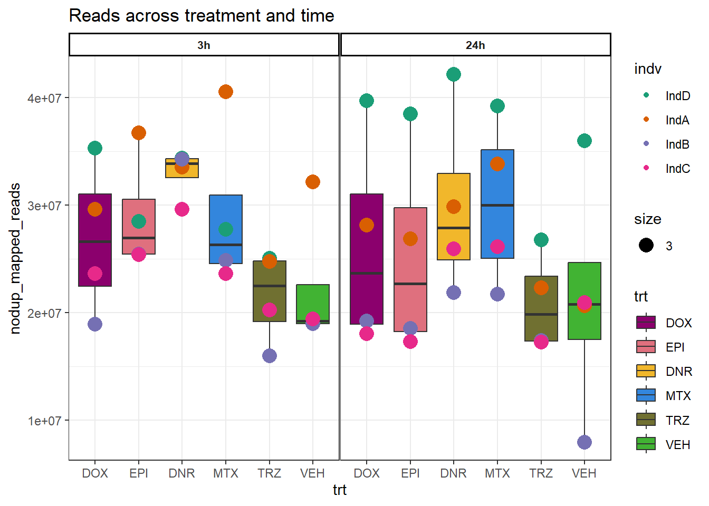
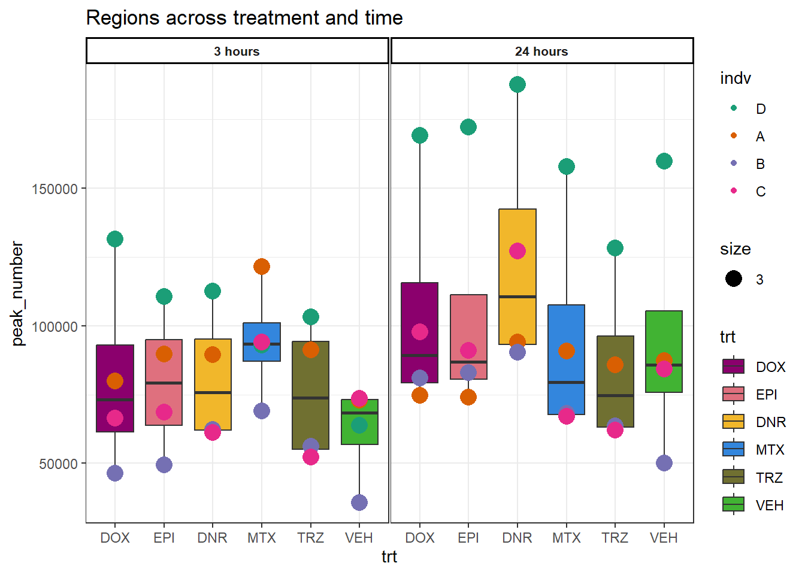
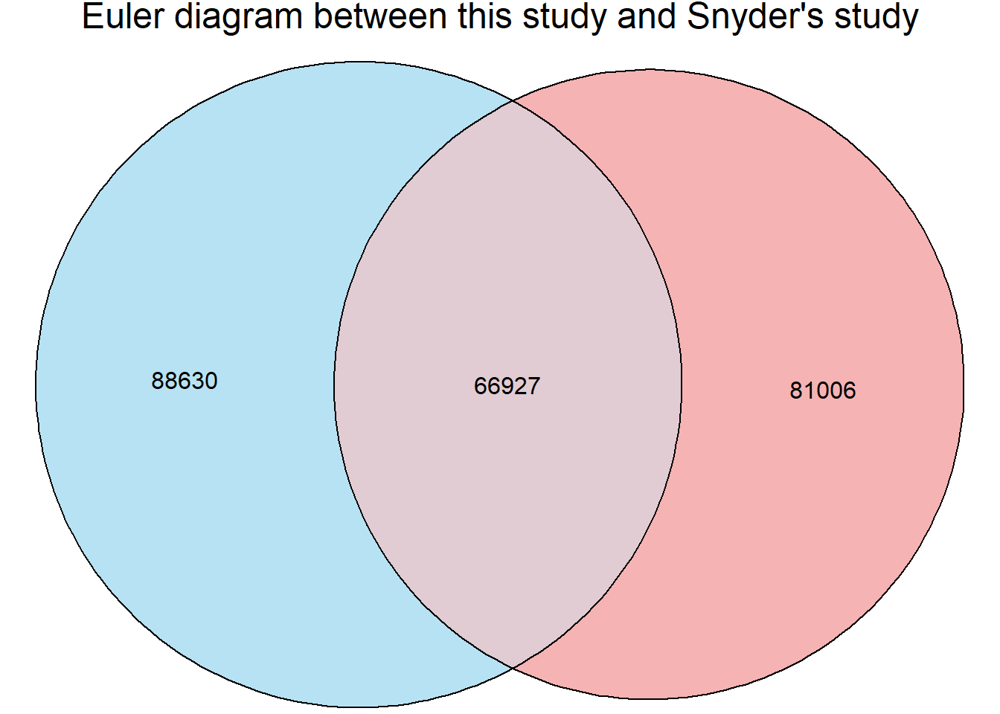
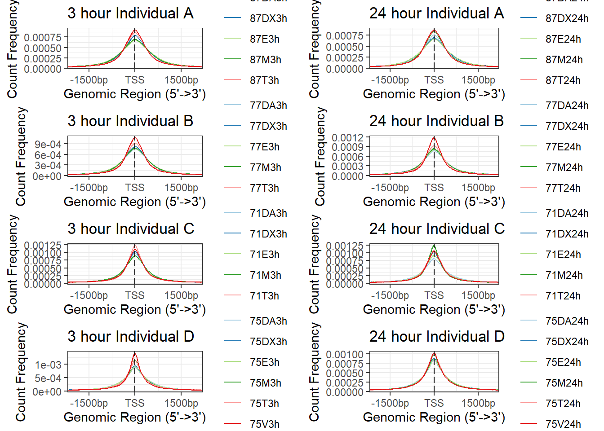
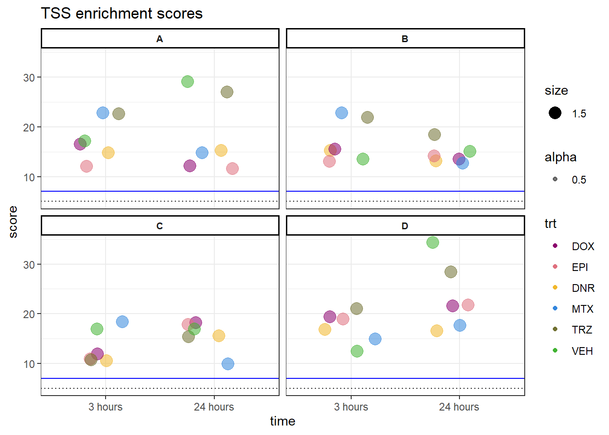
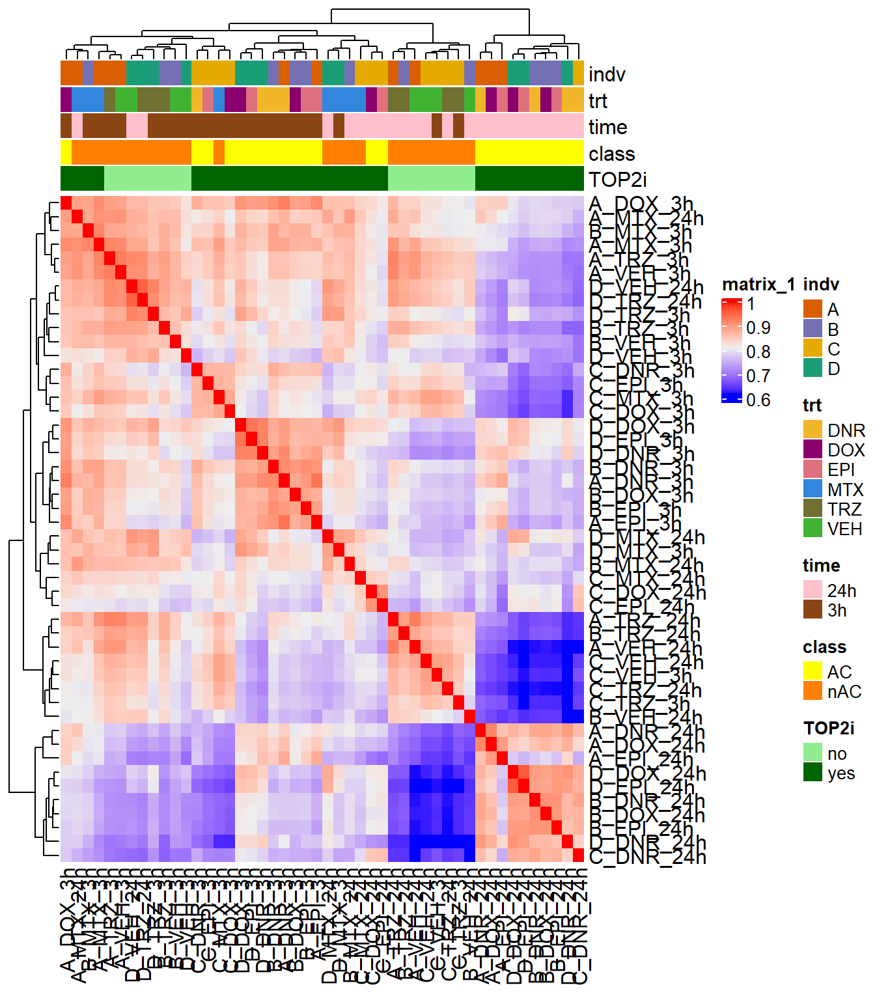
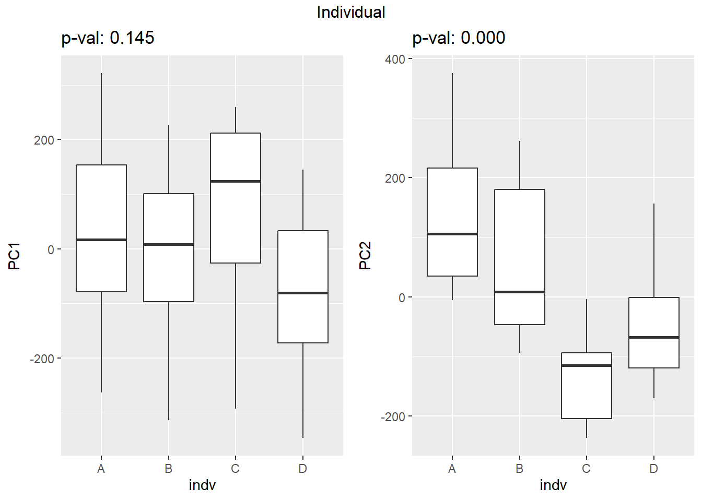
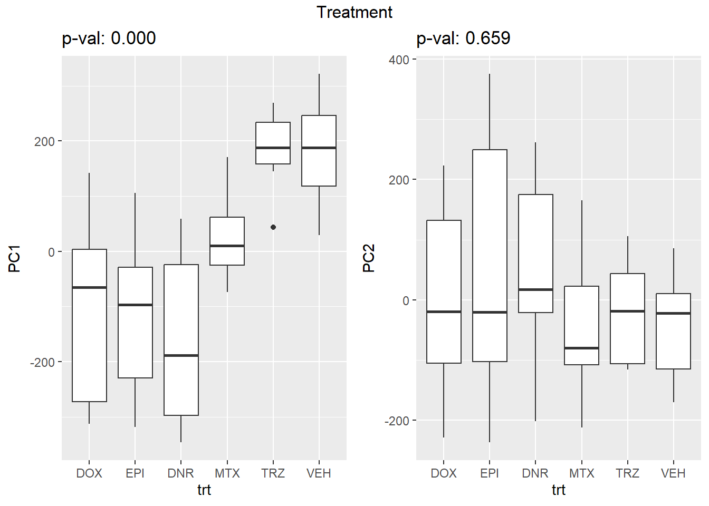
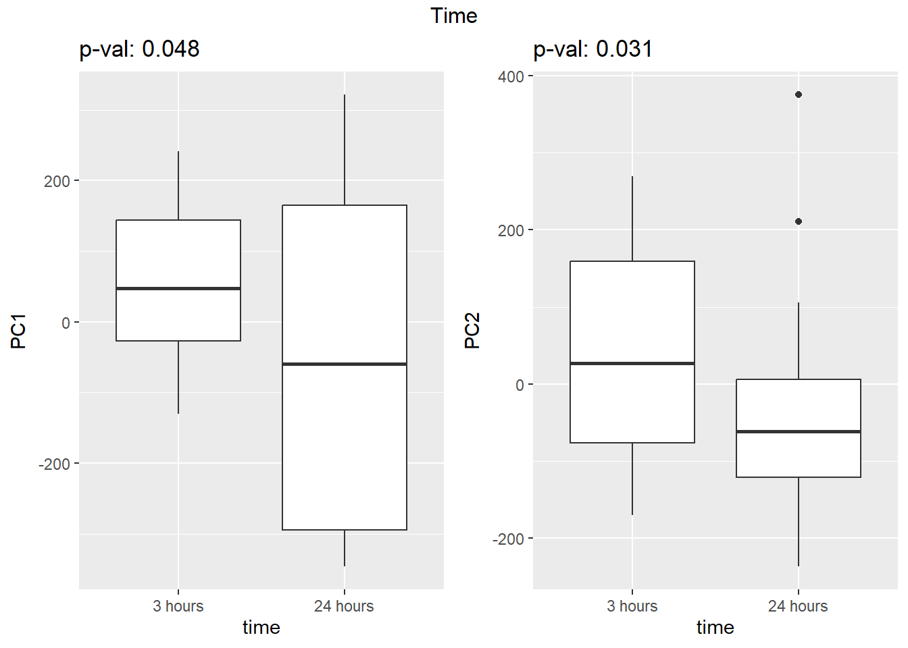

Supplemental Figures 1-12
Renee Matthews
2025-02-26
Last updated: 2025-08-08
Checks: 7 0
Knit directory: ATAC_learning/
This reproducible R Markdown analysis was created with workflowr (version 1.7.1). The Checks tab describes the reproducibility checks that were applied when the results were created. The Past versions tab lists the development history.
Great! Since the R Markdown file has been committed to the Git repository, you know the exact version of the code that produced these results.
Great job! The global environment was empty. Objects defined in the global environment can affect the analysis in your R Markdown file in unknown ways. For reproduciblity it’s best to always run the code in an empty environment.
The command set.seed(20231016) was run prior to running
the code in the R Markdown file. Setting a seed ensures that any results
that rely on randomness, e.g. subsampling or permutations, are
reproducible.
Great job! Recording the operating system, R version, and package versions is critical for reproducibility.
Nice! There were no cached chunks for this analysis, so you can be confident that you successfully produced the results during this run.
Great job! Using relative paths to the files within your workflowr project makes it easier to run your code on other machines.
Great! You are using Git for version control. Tracking code development and connecting the code version to the results is critical for reproducibility.
The results in this page were generated with repository version 145f3c9. See the Past versions tab to see a history of the changes made to the R Markdown and HTML files.
Note that you need to be careful to ensure that all relevant files for
the analysis have been committed to Git prior to generating the results
(you can use wflow_publish or
wflow_git_commit). workflowr only checks the R Markdown
file, but you know if there are other scripts or data files that it
depends on. Below is the status of the Git repository when the results
were generated:
Ignored files:
Ignored: .RData
Ignored: .Rhistory
Ignored: .Rproj.user/
Ignored: analysis/H3K27ac_integration_noM.Rmd
Ignored: analysis/figure/
Ignored: data/ACresp_SNP_table.csv
Ignored: data/ARR_SNP_table.csv
Ignored: data/All_merged_peaks.tsv
Ignored: data/CAD_gwas_dataframe.RDS
Ignored: data/CTX_SNP_table.csv
Ignored: data/Collapsed_expressed_NG_peak_table.csv
Ignored: data/DEG_toplist_sep_n45.RDS
Ignored: data/FRiP_first_run.txt
Ignored: data/Final_four_data/
Ignored: data/Frip_1_reads.csv
Ignored: data/Frip_2_reads.csv
Ignored: data/Frip_3_reads.csv
Ignored: data/Frip_4_reads.csv
Ignored: data/Frip_5_reads.csv
Ignored: data/Frip_6_reads.csv
Ignored: data/GO_KEGG_analysis/
Ignored: data/HF_SNP_table.csv
Ignored: data/Ind1_75DA24h_dedup_peaks.csv
Ignored: data/Ind1_TSS_peaks.RDS
Ignored: data/Ind1_firstfragment_files.txt
Ignored: data/Ind1_fragment_files.txt
Ignored: data/Ind1_peaks_list.RDS
Ignored: data/Ind1_summary.txt
Ignored: data/Ind2_TSS_peaks.RDS
Ignored: data/Ind2_fragment_files.txt
Ignored: data/Ind2_peaks_list.RDS
Ignored: data/Ind2_summary.txt
Ignored: data/Ind3_TSS_peaks.RDS
Ignored: data/Ind3_fragment_files.txt
Ignored: data/Ind3_peaks_list.RDS
Ignored: data/Ind3_summary.txt
Ignored: data/Ind4_79B24h_dedup_peaks.csv
Ignored: data/Ind4_TSS_peaks.RDS
Ignored: data/Ind4_V24h_fraglength.txt
Ignored: data/Ind4_fragment_files.txt
Ignored: data/Ind4_fragment_filesN.txt
Ignored: data/Ind4_peaks_list.RDS
Ignored: data/Ind4_summary.txt
Ignored: data/Ind5_TSS_peaks.RDS
Ignored: data/Ind5_fragment_files.txt
Ignored: data/Ind5_fragment_filesN.txt
Ignored: data/Ind5_peaks_list.RDS
Ignored: data/Ind5_summary.txt
Ignored: data/Ind6_TSS_peaks.RDS
Ignored: data/Ind6_fragment_files.txt
Ignored: data/Ind6_peaks_list.RDS
Ignored: data/Ind6_summary.txt
Ignored: data/Knowles_4.RDS
Ignored: data/Knowles_5.RDS
Ignored: data/Knowles_6.RDS
Ignored: data/LiSiLTDNRe_TE_df.RDS
Ignored: data/MI_gwas.RDS
Ignored: data/SNP_GWAS_PEAK_MRC_id
Ignored: data/SNP_GWAS_PEAK_MRC_id.csv
Ignored: data/SNP_gene_cat_list.tsv
Ignored: data/SNP_supp_schneider.RDS
Ignored: data/TE_info/
Ignored: data/TFmapnames.RDS
Ignored: data/all_TSSE_scores.RDS
Ignored: data/all_four_filtered_counts.txt
Ignored: data/aln_run1_results.txt
Ignored: data/anno_ind1_DA24h.RDS
Ignored: data/anno_ind4_V24h.RDS
Ignored: data/annotated_gwas_SNPS.csv
Ignored: data/background_n45_he_peaks.RDS
Ignored: data/cardiac_muscle_FRIP.csv
Ignored: data/cardiomyocyte_FRIP.csv
Ignored: data/col_ng_peak.csv
Ignored: data/cormotif_full_4_run.RDS
Ignored: data/cormotif_full_4_run_he.RDS
Ignored: data/cormotif_full_6_run.RDS
Ignored: data/cormotif_full_6_run_he.RDS
Ignored: data/cormotif_probability_45_list.csv
Ignored: data/cormotif_probability_45_list_he.csv
Ignored: data/cormotif_probability_all_6_list.csv
Ignored: data/cormotif_probability_all_6_list_he.csv
Ignored: data/datasave.RDS
Ignored: data/embryo_heart_FRIP.csv
Ignored: data/enhancer_list_ENCFF126UHK.bed
Ignored: data/enhancerdata/
Ignored: data/filt_Peaks_efit2.RDS
Ignored: data/filt_Peaks_efit2_bl.RDS
Ignored: data/filt_Peaks_efit2_n45.RDS
Ignored: data/first_Peaksummarycounts.csv
Ignored: data/first_run_frag_counts.txt
Ignored: data/full_bedfiles/
Ignored: data/gene_ref.csv
Ignored: data/gwas_1_dataframe.RDS
Ignored: data/gwas_2_dataframe.RDS
Ignored: data/gwas_3_dataframe.RDS
Ignored: data/gwas_4_dataframe.RDS
Ignored: data/gwas_5_dataframe.RDS
Ignored: data/high_conf_peak_counts.csv
Ignored: data/high_conf_peak_counts.txt
Ignored: data/high_conf_peaks_bl_counts.txt
Ignored: data/high_conf_peaks_counts.txt
Ignored: data/hits_files/
Ignored: data/hyper_files/
Ignored: data/hypo_files/
Ignored: data/ind1_DA24hpeaks.RDS
Ignored: data/ind1_TSSE.RDS
Ignored: data/ind2_TSSE.RDS
Ignored: data/ind3_TSSE.RDS
Ignored: data/ind4_TSSE.RDS
Ignored: data/ind4_V24hpeaks.RDS
Ignored: data/ind5_TSSE.RDS
Ignored: data/ind6_TSSE.RDS
Ignored: data/initial_complete_stats_run1.txt
Ignored: data/left_ventricle_FRIP.csv
Ignored: data/median_24_lfc.RDS
Ignored: data/median_3_lfc.RDS
Ignored: data/mergedPeads.gff
Ignored: data/mergedPeaks.gff
Ignored: data/motif_list_full
Ignored: data/motif_list_n45
Ignored: data/motif_list_n45.RDS
Ignored: data/multiqc_fastqc_run1.txt
Ignored: data/multiqc_fastqc_run2.txt
Ignored: data/multiqc_genestat_run1.txt
Ignored: data/multiqc_genestat_run2.txt
Ignored: data/my_hc_filt_counts.RDS
Ignored: data/my_hc_filt_counts_n45.RDS
Ignored: data/n45_bedfiles/
Ignored: data/n45_files
Ignored: data/other_papers/
Ignored: data/peakAnnoList_1.RDS
Ignored: data/peakAnnoList_2.RDS
Ignored: data/peakAnnoList_24_full.RDS
Ignored: data/peakAnnoList_24_n45.RDS
Ignored: data/peakAnnoList_3.RDS
Ignored: data/peakAnnoList_3_full.RDS
Ignored: data/peakAnnoList_3_n45.RDS
Ignored: data/peakAnnoList_4.RDS
Ignored: data/peakAnnoList_5.RDS
Ignored: data/peakAnnoList_6.RDS
Ignored: data/peakAnnoList_Eight.RDS
Ignored: data/peakAnnoList_full_motif.RDS
Ignored: data/peakAnnoList_n45_motif.RDS
Ignored: data/siglist_full.RDS
Ignored: data/siglist_n45.RDS
Ignored: data/summarized_peaks_dataframe.txt
Ignored: data/summary_peakIDandReHeat.csv
Ignored: data/test.list.RDS
Ignored: data/testnames.txt
Ignored: data/toplist_6.RDS
Ignored: data/toplist_full.RDS
Ignored: data/toplist_full_DAR_6.RDS
Ignored: data/toplist_n45.RDS
Ignored: data/trimmed_seq_length.csv
Ignored: data/unclassified_full_set_peaks.RDS
Ignored: data/unclassified_n45_set_peaks.RDS
Ignored: data/xstreme/
Untracked files:
Untracked: RNA_seq_integration.Rmd
Untracked: Rplot.pdf
Untracked: Sig_meta
Untracked: analysis/.gitignore
Untracked: analysis/AF_HF_SNP_DAR_paper.Rmd
Untracked: analysis/Cormotif_analysis_testing diff.Rmd
Untracked: analysis/Diagnosis-tmm.Rmd
Untracked: analysis/Expressed_RNA_associations.Rmd
Untracked: analysis/IF_counts_20x.Rmd
Untracked: analysis/Jaspar_motif_DAR_paper.Rmd
Untracked: analysis/LFC_corr.Rmd
Untracked: analysis/SVA.Rmd
Untracked: analysis/Tan2020.Rmd
Untracked: analysis/making_master_peaks_list.Rmd
Untracked: analysis/my_hc_filt_counts.csv
Untracked: code/Concatenations_for_export.R
Untracked: code/IGV_snapshot_code.R
Untracked: code/LongDARlist.R
Untracked: code/just_for_Fun.R
Untracked: my_plot.pdf
Untracked: my_plot.png
Untracked: output/cormotif_probability_45_list.csv
Untracked: output/cormotif_probability_all_6_list.csv
Untracked: setup.RData
Unstaged changes:
Modified: ATAC_learning.Rproj
Modified: analysis/AC_shared_analysis.Rmd
Modified: analysis/AF_HF_SNPs.Rmd
Modified: analysis/Cardiotox_SNPs.Rmd
Modified: analysis/Cormotif_analysis.Rmd
Modified: analysis/DEG_analysis.Rmd
Modified: analysis/DOX_DAR_heatmap.Rmd
Modified: analysis/Figure_4.Rmd
Modified: analysis/H3K27ac_integration.Rmd
Modified: analysis/Jaspar_motif.Rmd
Modified: analysis/Jaspar_motif_ff.Rmd
Modified: analysis/SNP_TAD_peaks.Rmd
Modified: analysis/Supp_Fig_12-19.Rmd
Modified: analysis/TE_analysis_ALL_DAR.Rmd
Modified: analysis/TE_analysis_norm.Rmd
Modified: analysis/final_four_analysis.Rmd
Modified: analysis/index.Rmd
Note that any generated files, e.g. HTML, png, CSS, etc., are not included in this status report because it is ok for generated content to have uncommitted changes.
These are the previous versions of the repository in which changes were
made to the R Markdown (analysis/Supp_Fig_1-11.Rmd) and
HTML (docs/Supp_Fig_1-11.html) files. If you’ve configured
a remote Git repository (see ?wflow_git_remote), click on
the hyperlinks in the table below to view the files as they were in that
past version.
| File | Version | Author | Date | Message |
|---|---|---|---|---|
| Rmd | 145f3c9 | reneeisnowhere | 2025-08-08 | wflow_publish("analysis/Supp_Fig_1-11.Rmd") |
| html | a3c4cdd | reneeisnowhere | 2025-05-01 | Build site. |
| html | b5ac214 | reneeisnowhere | 2025-03-20 | Build site. |
| Rmd | 58be8ae | reneeisnowhere | 2025-03-20 | updates to supplementary files |
| Rmd | ea368e6 | reneeisnowhere | 2025-03-20 | updates to supplementary files |
| html | 35ff04f | E. Renee Matthews | 2025-03-05 | Build site. |
| html | 6b0cfc3 | E. Renee Matthews | 2025-02-27 | Build site. |
| Rmd | bb8d8a8 | E. Renee Matthews | 2025-02-27 | updates to plot |
| Rmd | 634732c | E. Renee Matthews | 2025-02-27 | updates to volcano plots |
| html | e446dec | E. Renee Matthews | 2025-02-26 | Build site. |
| Rmd | 785ca3a | E. Renee Matthews | 2025-02-26 | updating supplemental figures |
| Rmd | faa2861 | E. Renee Matthews | 2025-02-26 | end of day |
| Rmd | 66d9e61 | E. Renee Matthews | 2025-02-26 | first open commit |
library(tidyverse)
library(kableExtra)
library(broom)
library(RColorBrewer)
library(ChIPseeker)
library("TxDb.Hsapiens.UCSC.hg38.knownGene")
library("org.Hs.eg.db")
library(rtracklayer)
library(ggfortify)
library(readr)
library(BiocGenerics)
library(gridExtra)
library(VennDiagram)
library(scales)
library(ggVennDiagram)
library(BiocParallel)
library(ggpubr)
library(edgeR)
library(genomation)
library(ggsignif)
library(plyranges)
library(ggrepel)
library(ComplexHeatmap)
library(cowplot)
library(smplot2)
library(readxl)
library(devtools)
library(vargen)
library(eulerr)
library(regioneR)Figure S1: Read numbers are similar across time and drug treatments.
drug_pal <- c("#8B006D","#DF707E","#F1B72B", "#3386DD","#707031","#41B333")
read_summary <- read_delim(file="data/Final_four_data/reads_summary_FF.txt",delim="\t")
read_summary %>%
pivot_longer(., cols=c(total_reads:unique_mapped_reads), names_to = "read_type",values_to = "counts") %>%
dplyr::mutate(trt=factor(trt, levels = c("DOX", "EPI","DNR", "MTX","TRZ","VEH"))) %>%
mutate(time=factor(time, levels =c("3h","24h"))) %>%
mutate(indv=gsub("1","D",indv), indv=gsub("2","A",indv), indv=gsub("3","B",indv), indv=gsub("6","C",indv))%>%
mutate(indv=factor(indv, levels=c("IndD","IndA","IndB","IndC"))) %>%
mutate(read_type=factor(read_type, levels =c("total_reads","total_mapped_reads","nuclear_mapped_reads","unique_mapped_reads","nodup_mapped_reads"))) %>%
ggplot(., aes(x=read_type, y=counts))+
geom_boxplot(aes(fill=trt))+
geom_point(aes(col=indv))+
theme_bw()+
facet_wrap(~trt+time,nrow = 3, ncol = 6 )+
scale_fill_manual(values=drug_pal)+
scale_color_brewer(palette = "Dark2")+
theme(strip.text = element_text(face = "bold", hjust = 0, size = 8),
strip.background = element_rect(fill = "white", linetype = "solid",
color = "black", linewidth = 1),
panel.spacing = unit(1, 'points'),
axis.text.x=element_text(angle = 90, vjust = 0.5, hjust=1))
| Version | Author | Date |
|---|---|---|
| e446dec | E. Renee Matthews | 2025-02-26 |
Figure 2: Peak numbers are similar across time and drug treatments.
Figure S2A: Read numbers across treatment and time
read_summary %>%
dplyr::select(sample:time, nodup_mapped_reads) %>%
dplyr::mutate(trt=factor(trt, levels = c("DOX", "EPI","DNR", "MTX","TRZ","VEH"))) %>%
mutate(time=factor(time, levels =c("3h","24h"))) %>%
mutate(indv=gsub("1","D",indv),
indv=gsub("2","A",indv),
indv=gsub("3","B",indv),
indv=gsub("6","C",indv))%>%
mutate(indv=factor(indv, levels=c("IndD","IndA","IndB","IndC"))) %>%
ggplot(., aes(x=trt,y=nodup_mapped_reads,group=(interaction(time,trt))))+
geom_boxplot(aes(fill=trt))+
geom_point(aes(col=indv, size =3))+
facet_wrap(time~.)+
scale_fill_manual(values=drug_pal)+
scale_color_brewer(palette = "Dark2")+
ggtitle("Reads across treatment and time")+
theme_bw()+
theme(strip.text = element_text(face = "bold", hjust = .5, size = 8),
strip.background = element_rect(fill = "white", linetype = "solid",
color = "black", linewidth = 1),
panel.spacing = unit(1, 'points'))
| Version | Author | Date |
|---|---|---|
| e446dec | E. Renee Matthews | 2025-02-26 |
Figure S2B: Regions across treatment and time
peakcount_ff <- read_delim("data/Final_four_data/Peak_count_ff.txt",delim= "\t")
peakcount_ff %>%
mutate(time = factor(time, levels = c("3h", "24h"), labels= c("3 hours","24 hours"))) %>%
mutate(trt = factor(trt, levels = c("DOX","EPI", "DNR", "MTX", "TRZ", "VEH"))) %>%
mutate(indv=gsub("1","D",indv),
indv=gsub("2","A",indv),
indv=gsub("3","B",indv),
indv=gsub("6","C",indv))%>%
mutate(indv=factor(indv, levels=c("D","A","B","C"))) %>%
ggplot(., aes(x=trt,y=peak_number))+
geom_boxplot(aes(fill=trt))+
geom_point(aes(col=indv, size =3))+
facet_wrap(time~.)+
scale_fill_manual(values=drug_pal)+
scale_color_brewer(palette = "Dark2")+
ggtitle("Peaks across treatment and time")+
theme_bw()+
theme(strip.text = element_text(face = "bold", hjust = .5, size = 8),
strip.background = element_rect(fill = "white", linetype = "solid",
color = "black", linewidth = 1),
panel.spacing = unit(1, 'points'))
Figure S3: Samples have a high fraction of read-fragments in high-confidence open chromatin regions.
frip_newpeaks <- c(38.8,36.3,46.0,38.9,49.6,40.0,39.2,30.2,52.1,39.8,51.1,28.0,
42.3,40.3,39.7,38.7,37.9,36.6,36.0,48.7,50.4,44.2,52.0,31.9,
40.5,34.1,41.2,33.7,43.5,28.6,34.7,42.8,38.1,40.3,44.6,26.4,
46.5,23.9,46.9,25.8,46.7,23.8,21.8,39.2,33.2,22.8,36.8,34.8)
peakcount_ff$frip_newpeaks <- frip_newpeaks
peakcount_ff %>%
mutate(time = factor(time, levels = c("3h", "24h"), labels= c("3 hours","24 hours"))) %>%
mutate(trt = factor(trt, levels = c("DOX","EPI", "DNR", "MTX", "TRZ", "VEH"))) %>%
mutate(indv=gsub("1","D",indv),
indv=gsub("2","A",indv),
indv=gsub("3","B",indv),
indv=gsub("6","C",indv))%>%
mutate(indv=factor(indv, levels=c("D","A","B","C"))) %>%
ggplot(., aes(x=trt,y=frip_newpeaks))+
geom_boxplot(aes(fill=trt))+
geom_point(aes(col=indv, size =3))+
geom_hline(aes(yintercept = 20), linetype=2, color="red")+
facet_wrap(time~.)+
scale_fill_manual(values=drug_pal)+
scale_color_brewer(palette = "Dark2")+
ggtitle("Fraction of fragments in high-confidence regions")+
theme_bw()+
theme(strip.text = element_text(face = "bold", hjust = .5, size = 8),
strip.background = element_rect(fill = "white", linetype = "solid",
color = "black", linewidth = 1),
panel.spacing = unit(1, 'points'))+
coord_cartesian(ylim = c(0,100))
Figure S4: iPSC-CM open chromatin regions are shared with human heart-left ventricle open chromatin regions.
Figure S4A: The overlap between the two region sets:
Snyder_41peaks <- read.delim("data/other_papers/ENCFF966JZT_bed_Snyder_41peaks.bed",header=TRUE) %>%
GRanges()
filtered_hc_regions <- read_delim("data/Final_four_data/LCPM_matrix_ff.txt",delim = "/") %>%
dplyr::select(Peakid) %>%
separate_wider_delim(., cols =Peakid,
names=c("chr","start","end"),
delim = ".",
cols_remove = FALSE)
filtered_hc_regions_gr <- filtered_hc_regions %>%
dplyr::filter(chr!="chrY") %>%
GRanges() %>%
keepStandardChromosomes(., pruning.mode = "coarse")
heart_overlap <- join_overlap_intersect(Snyder_41peaks,filtered_hc_regions_gr)
length(unique(heart_overlap$Peakid))[1] 66927fit <- euler(c("This study" = length(filtered_hc_regions_gr) - length(unique(heart_overlap$Peakid)),
"Snyder study" = length(Snyder_41peaks) - length(unique(heart_overlap$name)),
"This study&Snyder study" = 66927))
plot(fit, fills = list(fill = c("skyblue", "lightcoral"), alpha = 0.6),
labels = FALSE, edges = TRUE, quantities = TRUE,
main = "Euler diagram between this study and Snyder's study")
| Version | Author | Date |
|---|---|---|
| e446dec | E. Renee Matthews | 2025-02-26 |
Figure S4B: RegioneR permTest results show overlap is significant using 1000 tests.
Snyder_41peaks <- read.delim("data/other_papers/ENCFF966JZT_bed_Snyder_41peaks.bed",header=TRUE) %>%
GRanges()
# genome <- BSgenome.Hsapiens.UCSC.hg38
# perm_test_hlv <- permTest(A= all_regions,
# B= Snyder_41peaks,
# ntimes=1000,
# randomize.function=randomizeRegions,
# evaluate.function = numOverlaps,
# genome=genome,
# count.once= TRUE,
# verbose = TRUE)
# saveRDS(perm_test_hlv,"data/Final_four_data/re_analysis/perm_test_results_HLV.RDS")
perm_test_hlv <- readRDS("data/Final_four_data/re_analysis/perm_test_results_HLV.RDS")
perm_test_hlv$numOverlaps
P-value: 0.000999000999000999
Z-score: 760.9593
Number of iterations: 1000
Alternative: greater
Evaluation of the original region set: 66927
Evaluation function: numOverlaps
Randomization function: randomizeRegions
attr(,"class")
[1] "permTestResultsList"plot(perm_test_hlv)
Figure S5: Open chromatin regions are enriched at transcription start sites.
Figure S5A: Enrichment of accessible chromatin at TSS
## What I did here: I called all my narrowpeak files made by MACS2 callpeaks
# peakfiles1 <- choose.files()
#
# ##This loop first established a list then (because I already knew the list had 12 files)
# ## I then imported each of these onto that list. Once I had the list, I stored it as
# ## an R object,
# Ind1_peaks <- list()
# for (file in 1:12){
# testname <- basename(peakfiles1[file])
# banana_peel <- str_split_i(testname, "_",3)
# Ind1_peaks[[banana_peel]] <- readPeakFile(peakfiles1[file])
# }
# saveRDS(Ind4_peaks, "data/Ind4_peaks_list.RDS")
# I then called annotatePeak on that list object, and stored that as a R object for later retrieval.)
# peakAnnoList_1 <- lapply(Ind1_peaks, annotatePeak, tssRegion =c(-2000,2000), TxDb= txdb)
# saveRDS(peakAnnoList_1, "data/peakAnnoList_1.RDS")
IndD_TSS_peaks_plot <- readRDS("data/Ind1_TSS_peaks.RDS")
IndA_TSS_peaks_plot <- readRDS("data/Ind2_TSS_peaks.RDS")
IndB_TSS_peaks_plot <- readRDS("data/Ind3_TSS_peaks.RDS")
IndC_TSS_peaks_plot <- readRDS("data/Ind6_TSS_peaks.RDS")
d1<- plotAvgProf(IndD_TSS_peaks_plot[c(1,3,5,7,9,11)], xlim=c(-3000, 3000), ylab = "Count Frequency")+ ggtitle("3 hour Individual D" )+coord_cartesian(xlim=c(-2000,2000))>> plotting figure... 2025-08-08 9:36:49 AM a1 <- plotAvgProf(IndA_TSS_peaks_plot[c(1,3,5,7,9,11)], xlim=c(-3000, 3000), ylab = "Count Frequency")+ ggtitle("3 hour Individual A" )+coord_cartesian(xlim=c(-2000,2000))>> plotting figure... 2025-08-08 9:36:50 AM b1 <- plotAvgProf(IndB_TSS_peaks_plot[c(1,3,5,7,9,11)], xlim=c(-3000, 3000), ylab = "Count Frequency")+ ggtitle("3 hour Individual B" )+coord_cartesian(xlim=c(-2000,2000))>> plotting figure... 2025-08-08 9:36:51 AM c1 <- plotAvgProf(IndC_TSS_peaks_plot[c(1,3,5,7,9,11)], xlim=c(-3000, 3000), ylab = "Count Frequency")+ ggtitle("3 hour Individual C" )+coord_cartesian(xlim=c(-2000,2000))>> plotting figure... 2025-08-08 9:36:52 AM d2 <- plotAvgProf(IndD_TSS_peaks_plot[c(2,4,6,8,10,12)], xlim=c(-3000, 3000),ylab = "Count Frequency")+ ggtitle("24 hour Individual D" )+coord_cartesian(xlim=c(-2000,2000))>> plotting figure... 2025-08-08 9:36:53 AM a2 <- plotAvgProf(IndA_TSS_peaks_plot[c(2,4,6,8,10,12)], xlim=c(-3000, 3000),ylab = "Count Frequency")+ ggtitle("24 hour Individual A" )+coord_cartesian(xlim=c(-2000,2000))>> plotting figure... 2025-08-08 9:36:54 AM b2 <- plotAvgProf(IndB_TSS_peaks_plot[c(2,4,6,8,10,12)], xlim=c(-3000, 3000),ylab = "Count Frequency")+ ggtitle("24 hour Individual B" )+coord_cartesian(xlim=c(-2000,2000))>> plotting figure... 2025-08-08 9:36:55 AM c2 <- plotAvgProf(IndC_TSS_peaks_plot[c(2,4,6,8,10,12)], xlim=c(-3000, 3000),ylab = "Count Frequency")+ ggtitle("24 hour Individual C" )+coord_cartesian(xlim=c(-2000,2000))>> plotting figure... 2025-08-08 9:36:56 AM plot_grid(a1,a2, b1,b2,c1,c2,d1,d2, axis="l",align = "hv",nrow=4, ncol=2)
| Version | Author | Date |
|---|---|---|
| e446dec | E. Renee Matthews | 2025-02-26 |
Code used to calculate fig S5B enrichment scores
library(GenomicRanges)
library(ATACseqQC)
bamfilelist <- choose.files()
list1 <- lapply(bamfilelist, readBamFile,bigFile=TRUE)
# bamfilenames <- lapply(bamfilelist, basename)
# gal1 <- readBamFile(bamFile=bamfile, tag=character(0),
# asMates=FALSE)
library(TxDb.Hsapiens.UCSC.hg38.knownGene)
txs <- transcripts(TxDb.Hsapiens.UCSC.hg38.knownGene)
# tsse <- TSSEscore(gal1, txs)
indA_TSSE <- lapply(list1,TSSEscore, txs=txs)
# saveRDS(indC_TSSE, "data/Final_four_data/H3K27ac_files/indC_TSSE.RDS")
# saveRDS(indB_TSSE, "data/Final_four_data/H3K27ac_files/indB_TSSE.RDS")
# saveRDS(indA_TSSE, "data/Final_four_data/H3K27ac_files/indA_TSSE.RDS")
# saveRDS(ind6_TSSE, "data/ind6_TSSE.RDS")
# saveRDS(ind4_TSSE, "data/ind4_TSSE.RDS")
# saveRDS(ind5_TSSE, "data/ind5_TSSE.RDS")
# saveRDS(ind2_TSSE, "data/ind2_TSSE.RDS")
# saveRDS(ind3_TSSE, "data/ind3_TSSE.RDS")
# saveRDS(ind1_TSSE,"data/ind1_TSSE.RDS")
# ind1_TSSE <- tribble(
# ~sample, ~TSSE,
# "1_DNR_3",16.89282,
# "1_DOX_3",19.43605,
# "1_EPI_3",18.97398,
# "1_MTX_3",14.93388,
# "1_TRZ_3",21.0788,
# "1_VEH_3",12.46743,
# "1_DNR_24",16.56416,
# "1_DOX_24",21.6031,
# "1_EPI_24", 21.75785,
# "1_MTX_24",17.63624,
# "1_TRZ_24", 28.37166,
# "1_VEH_24",34.34781)
##now I can ccombine them all!
ind1_TSSE <- readRDS("data/ind1_TSSE.RDS")
ind2_TSSE <- readRDS("data/ind2_TSSE.RDS")
ind3_TSSE <- readRDS("data/ind3_TSSE.RDS")
ind4_TSSE <- readRDS("data/ind4_TSSE.RDS")
ind5_TSSE <- readRDS("data/ind5_TSSE.RDS")
ind6_TSSE <- readRDS("data/ind6_TSSE.RDS")
ind1 <- lapply(ind1_TSSE, '[[',2)
names(ind1) <- c("1_DNR_3", "1_DNR_24","1_DOX_3",
"1_DOX_24","1_EPI_3","1_EPI_24","1_MTX_3",
"1_MTX_24","1_TRZ_3" , "1_TRZ_24","1_VEH_3","1_VEH_24")
ind1 <- lapply(ind1_TSSE, '[[',2)
names(ind1) <- c("1_DNR_3", "1_DNR_24","1_DOX_3",
"1_DOX_24","1_EPI_3","1_EPI_24","1_MTX_3",
"1_MTX_24","1_TRZ_3" , "1_TRZ_24","1_VEH_3","1_VEH_24")
ind2 <- lapply(ind2_TSSE, '[[',2)
names(ind2) <- c("2_DNR_3", "2_DNR_24","2_DOX_3",
"2_DOX_24","2_EPI_3","2_EPI_24","2_MTX_3",
"2_MTX_24","2_TRZ_3" , "2_TRZ_24","2_VEH_3","2_VEH_24")
ind3 <- lapply(ind3_TSSE, '[[',2)
names(ind3) <- c("3_DNR_3", "3_DNR_24","3_DOX_3",
"3_DOX_24","3_EPI_3","3_EPI_24","3_MTX_3",
"3_MTX_24","3_TRZ_3" , "3_TRZ_24","3_VEH_3","3_VEH_24")
ind4 <- lapply(ind4_TSSE, '[[',2)
names(ind4) <- c("4_DNR_3", "4_DNR_24","4_DOX_3",
"4_DOX_24","4_EPI_3","4_EPI_24","4_MTX_3",
"4_MTX_24","4_TRZ_3" , "4_TRZ_24","4_VEH_3","4_VEH_24")
ind5 <- lapply(ind5_TSSE, '[[',2)
names(ind5) <- c("5_DNR_3", "5_DNR_24","5_DOX_3",
"5_DOX_24","5_EPI_3","5_EPI_24","5_MTX_3",
"5_MTX_24","5_TRZ_3" , "5_TRZ_24","5_VEH_3","5_VEH_24")
ind6 <- lapply(ind6_TSSE, '[[',2)
names(ind6) <- c("6_DNR_3", "6_DNR_24","6_DOX_3",
"6_DOX_24","6_EPI_3","6_EPI_24","6_MTX_3",
"6_MTX_24","6_TRZ_3" , "6_TRZ_24","6_VEH_3","6_VEH_24")
allTSSE <- c(ind1, ind2, ind3, ind4, ind5, ind6)
allTSSE <- do.call(rbind, allTSSE)
saveRDS(allTSSE, "data/all_TSSE_scores.RDS")
############################################################
###Adding H3K27 combos
indC_TSSE <- readRDS("data/Final_four_data/H3K27ac_files/indC_TSSE.RDS")
indB_TSSE <- readRDS("data/Final_four_data/H3K27ac_files/indB_TSSE.RDS")
indA_TSSE <- readRDS("data/Final_four_data/H3K27ac_files/indA_TSSE.RDS")
indA <- lapply(indA_TSSE, '[[',2)
names(indA) <- c("A_DNR_3", "A_DNR_24","A_DOX_3",
"A_DOX_24","A_MTX_3",
"A_MTX_24","A_VEH_3","A_VEH_24")
indB <- lapply(indB_TSSE, '[[',2)
names(indB) <- c("B_DNR_3", "B_DNR_24","B_DOX_3","B_EPI_3",
"B_EPI_24","B_MTX_24","B_VEH_3","B_VEH_24")
indC <- lapply(indC_TSSE, '[[',2)
names(indC) <- c("C_DNR_3", "C_DNR_24","C_DOX_24","C_EPI_3",
"C_EPI_24","C_MTX_3","C_MTX_24","C_VEH_3","C_VEH_24")
allTSSE_ac <- c(indA, indB, indC)
allTSSE_ac <- do.call(rbind, allTSSE_ac)
saveRDS(allTSSE_ac, "data/Final_four_data/H3K27ac_files/H3K27ac_TSSE_scores.RDS")Figure S5B: TSS enrichement scores
allTSSE <- readRDS( "data/all_TSSE_scores.RDS")
allTSSE %>% as.data.frame() %>%
rownames_to_column("sample") %>%
separate(sample, into = c("indv","trt","time"), sep= "_") %>%
mutate(trt= factor(trt, levels = c("DOX","EPI","DNR","MTX","TRZ","VEH"))) %>%
mutate(time = factor(time, levels = c("3","24"),labels = c("3 hours","24 hours"))) %>%
dplyr::filter(indv !=4 &indv !=5) %>%
mutate(indv=gsub("1","D",indv),
indv=gsub("2","A",indv),
indv=gsub("3","B",indv),
indv=gsub("6","C",indv))%>%
ggplot(., aes(x= time, y= V1, group = indv))+
geom_jitter(aes(col = trt, size = 1.5, alpha = 0.5) , position=position_jitter(0.25))+
geom_hline(yintercept=5, linetype = 3)+
geom_hline(yintercept=7, col = "blue")+
facet_wrap(~indv)+
theme_bw()+
ylab("score")+
ggtitle("TSS enrichment scores")+
scale_color_manual(values=drug_pal)+
theme(strip.text = element_text(face = "bold", hjust = .5, size = 8),
strip.background = element_rect(fill = "white", linetype = "solid",
color = "black", linewidth = 1))
| Version | Author | Date |
|---|---|---|
| e446dec | E. Renee Matthews | 2025-02-26 |
Figure S6: Genome coverage is similar across samples at the TSS of the cardiac gene TNNT2.
knitr::include_graphics("assets/Fig\ S6.png", error=FALSE)
| Version | Author | Date |
|---|---|---|
| 50f3de9 | E. Renee Matthews | 2025-02-21 |
knitr::include_graphics("docs/assets/Fig\ S6.png",error = FALSE)
Figure S7: ATAC-seq samples cluster by time and treatment.
ATAC_counts <- readRDS("data/Final_four_data/ATAC_filtered_raw_counts_allsamples.RDS") %>% as.data.frame() %>%
rename_with(.,~gsub(pattern = "Ind1_75", replacement = "D_",.)) %>%
rename_with(.,~gsub(pattern = "Ind2_87", replacement = "A_",.)) %>%
rename_with(.,~gsub(pattern = "Ind3_77", replacement = "B_",.)) %>%
rename_with(.,~gsub(pattern = "Ind6_71", replacement = "C_",.)) %>%
rename_with(.,~gsub( "DX" ,'DOX',.)) %>%
rename_with(.,~gsub( "DA" ,'DNR',.)) %>%
rename_with(.,~gsub( "E" ,'EPI',.)) %>%
rename_with(.,~gsub( "T" ,'TRZ',.)) %>%
rename_with(.,~gsub( "M" ,'MTX',.)) %>%
rename_with(.,~gsub( "V" ,'VEH',.)) %>%
rename_with(.,~gsub("24h","_24h",.)) %>%
rename_with(.,~gsub("3h","_3h",.)) %>%
cpm(., log = TRUE)
FCmatrix_full <- ATAC_counts %>%
as.matrix() %>%
cor()
filmat_groupmat_col <- data.frame(timeset = colnames(FCmatrix_full))
counts_corr_mat <-filmat_groupmat_col %>%
# mutate(sample = timeset) %>%
separate(timeset, into = c("indv","trt","time"), sep= "_") %>%
mutate(class = if_else(trt == "DNR", "AC",
if_else(trt == "DOX", "AC",
if_else(trt == "EPI", "AC", "nAC")))) %>%
mutate(TOP2i = if_else(trt == "DNR", "yes",
if_else(trt == "DOX", "yes",
if_else(trt == "EPI", "yes",
if_else(trt == "MTX", "yes", "no")))))
mat_colors <- list(
trt= c("#F1B72B","#8B006D","#DF707E","#3386DD","#707031","#41B333"),
indv=c("#1B9E77", "#D95F02" ,"#7570B3", "#E6AB02"),
time=c("pink", "chocolate4"),
class=c("yellow1","darkorange1"),
TOP2i =c("darkgreen","lightgreen"))
names(mat_colors$trt) <- unique(counts_corr_mat$trt)
names(mat_colors$indv) <- unique(counts_corr_mat$indv)
names(mat_colors$time) <- unique(counts_corr_mat$time)
names(mat_colors$class) <- unique(counts_corr_mat$class)
names(mat_colors$TOP2i) <- unique(counts_corr_mat$TOP2i)
htanno_full <- ComplexHeatmap::HeatmapAnnotation(df = counts_corr_mat, col = mat_colors)
Heatmap(FCmatrix_full, top_annotation = htanno_full)
| Version | Author | Date |
|---|---|---|
| e446dec | E. Renee Matthews | 2025-02-26 |
Figure S8: PC1 associates with drug treatment and PC2 associates with individual.
pca_final_four <- (prcomp(t(ATAC_counts), scale. = TRUE))
pca_final_four_anno <- pca_final_four$x %>%
as.data.frame() %>%
rownames_to_column("sample") %>%
separate_wider_delim(., cols =sample,
names=c("indv","trt","time"),
delim = "_",
cols_remove = FALSE) %>%
mutate(time = factor(time, levels = c("3h", "24h"), labels= c("3 hours","24 hours"))) %>%
mutate(trt = factor(trt, levels = c("DOX","EPI", "DNR", "MTX", "TRZ", "VEH")))
pca_plot <-
function(df, col_var = NULL, shape_var = NULL, title = "") {
ggplot(df) + geom_point(aes(
x = PC1,
y = PC2,
color = col_var,
shape = shape_var
),
size = 5) +
labs(title = title, x = "PC 1", y = "PC 2") +
scale_color_manual(values = c(
"#8B006D",
"#DF707E",
"#F1B72B",
"#3386DD",
"#707031",
"#41B333"
))
}
get_regr_pval <- function(mod) {
# Returns the p-value for the Fstatistic of a linear model
# mod: class lm
stopifnot(class(mod) == "lm")
fstat <- summary(mod)$fstatistic
pval <- 1 - pf(fstat[1], fstat[2], fstat[3])
return(pval)
}
plot_versus_pc <- function(df, pc_num, fac) {
# df: data.frame
# pc_num: numeric, specific PC for plotting
# fac: column name of df for plotting against PC
pc_char <- paste0("PC", pc_num)
# Calculate F-statistic p-value for linear model
pval <- get_regr_pval(lm(df[[ pc_char]] ~ df[[ fac]]))
if (is.numeric(df[, f])) {
ggplot(df, aes_string(x = f, y = pc_char)) + geom_point() +
geom_smooth(method = "lm") + labs(title = sprintf("p-val: %.2f", pval))
} else {
ggplot(df, aes_string(x = f, y = pc_char)) + geom_boxplot() +
labs(title = sprintf("p-val: %.3f", pval))
}
}
facs <- c("indv", "trt", "time")
names(facs) <- c("Individual", "Treatment", "Time")
drug1 <- c("DOX","EPI", "DNR", "MTX", "TRZ", "VEH")##for changing shapes and colors
time <- rep(c("24h", "3h"),24) %>% factor(., levels = c("3h","24h"))
##gglistmaking
for (f in facs) {
# PC1 v PC2
pca_plot(pca_final_four_anno, col_var = f, shape_var = time,
title = names(facs)[which(facs == f)])
# print(last_plot())
# Plot f versus PC1 and PC2
f_v_pc1 <- arrangeGrob(plot_versus_pc(pca_final_four_anno, 1, f))
f_v_pc2 <- arrangeGrob(plot_versus_pc(pca_final_four_anno, 2, f))
grid.arrange(f_v_pc1, f_v_pc2, ncol = 2, top = names(facs)[which(facs == f)])
# summary(plot_versus_pc(PCA_info_anno_all, 1, f))
# summary(plot_versus_pc(PCA_info_anno_all, 2, f))
}
| Version | Author | Date |
|---|---|---|
| e446dec | E. Renee Matthews | 2025-02-26 |

| Version | Author | Date |
|---|---|---|
| e446dec | E. Renee Matthews | 2025-02-26 |

| Version | Author | Date |
|---|---|---|
| e446dec | E. Renee Matthews | 2025-02-26 |
Figure S9: Thousands of chromatin regions show changes in accessibility in response to TOP2i treatment.
efit2 <- readRDS("data/Final_four_data/re_analysis/Final_DAR_efit2_w_Bayes.RDS")
V.DNR_3.top= topTable(efit2, coef=1, adjust.method="BH", number=Inf, sort.by="p")
V.DOX_3.top= topTable(efit2, coef=2, adjust.method="BH", number=Inf, sort.by="p")
V.EPI_3.top= topTable(efit2, coef=3, adjust.method="BH", number=Inf, sort.by="p")
V.MTX_3.top= topTable(efit2, coef=4, adjust.method="BH", number=Inf, sort.by="p")
V.TRZ_3.top= topTable(efit2, coef=5, adjust.method="BH", number=Inf, sort.by="p")
V.DNR_24.top= topTable(efit2, coef=6, adjust.method="BH", number=Inf, sort.by="p")
V.DOX_24.top= topTable(efit2, coef=7, adjust.method="BH", number=Inf, sort.by="p")
V.EPI_24.top= topTable(efit2, coef=8, adjust.method="BH", number=Inf, sort.by="p")
V.MTX_24.top= topTable(efit2, coef=9, adjust.method="BH", number=Inf, sort.by="p")
V.TRZ_24.top= topTable(efit2, coef=10, adjust.method="BH", number=Inf, sort.by="p")
plot_filenames <- c("V.DNR_3.top","V.DOX_3.top","V.EPI_3.top","V.MTX_3.top",
"V.TRZ_.top","V.DNR_24.top","V.DOX_24.top","V.EPI_24.top",
"V.MTX_24.top","V.TRZ_24.top")
plot_files <- c( V.DNR_3.top,V.DOX_3.top,V.EPI_3.top,V.MTX_3.top,
V.TRZ_3.top,V.DNR_24.top,V.DOX_24.top,V.EPI_24.top,
V.MTX_24.top,V.TRZ_24.top)
volcanosig <- function(df, psig.lvl) {
df <- df %>%
mutate(threshold = ifelse(adj.P.Val > psig.lvl, "A", ifelse(adj.P.Val <= psig.lvl & logFC<=0,"B","C")))
# ifelse(adj.P.Val <= psig.lvl & logFC >= 0,"B", "C")))
##This is where I could add labels, but I have taken out
# df <- df %>% mutate(genelabels = "")
# df$genelabels[1:topg] <- df$rownames[1:topg]
ggplot(df, aes(x=logFC, y=-log10(P.Value))) +
ggrastr::geom_point_rast(aes(color=threshold))+
# geom_text_repel(aes(label = genelabels), segment.curvature = -1e-20,force = 1,size=2.5,
# arrow = arrow(length = unit(0.015, "npc")), max.overlaps = Inf) +
#geom_hline(yintercept = -log10(psig.lvl))+
xlab(expression("Log"[2]*" FC"))+
ylab(expression("-log"[10]*"P Value"))+
scale_color_manual(values = c("black", "red","blue"))+
theme_cowplot()+
ylim(0,25)+
xlim(-6,6)+
theme(legend.position = "none",
plot.title = element_text(size = rel(1.5), hjust = 0.5),
axis.title = element_text(size = rel(0.8)))
}
v1 <- volcanosig(V.DNR_3.top, 0.05)+ ggtitle("DNR 3 hour")
v2 <- volcanosig(V.DNR_24.top, 0.05)+ ggtitle("DNR 24 hour")+ylab("")
v3 <- volcanosig(V.DOX_3.top, 0.05)+ ggtitle("DOX 3 hour")
v4 <- volcanosig(V.DOX_24.top, 0.05)+ ggtitle("DOX 24 hour")+ylab("")
v5 <- volcanosig(V.EPI_3.top, 0.05)+ ggtitle("EPI 3 hour")
v6 <- volcanosig(V.EPI_24.top, 0.05)+ ggtitle("EPI 24 hour")+ylab("")
v7 <- volcanosig(V.MTX_3.top, 0.05)+ ggtitle("MTX 3 hour")
v8 <- volcanosig(V.MTX_24.top, 0.05)+ ggtitle("MTX 24 hour")+ylab("")
v9 <- volcanosig(V.TRZ_3.top, 0.05)+ ggtitle("TRZ 3 hour")
v10 <- volcanosig(V.TRZ_24.top, 0.05)+ ggtitle("TRZ 24 hour")+ylab("")
plot_grid(v1,v2, rel_widths =c(1,1))
plot_grid(v3,v4, rel_widths =c(1,1))
plot_grid(v5,v6, rel_widths =c(1,1))
plot_grid(v7,v8, rel_widths =c(1,1))
| Version | Author | Date |
|---|---|---|
| 6b0cfc3 | E. Renee Matthews | 2025-02-27 |
plot_grid(v9,v10, rel_widths =c(1,1))
| Version | Author | Date |
|---|---|---|
| 6b0cfc3 | E. Renee Matthews | 2025-02-27 |
Figure S10: Drug treatment and VEH show distinct chromatin accesibility at DARs
note, TRZ only had 1 DAR at 3 hours, so we show all accessible regions. A common color scale was applied to all heat maps to allow consistent comparisons across conditions. The scale is based on the global distribution of log2 cpm values across all samples. To minimize the influence of outlier expression values, the color scale was capped at the first and 99th percentiles of the global log2 cpm distribution. The median log2 cpm value was set to white. The number of clusters chosen for each set is determined by using the elbow method, which plots the “Total Within-Cluster Sum of Squares” against the number of clusters. The value was chosen uniquely for each plot.
library(tidyverse)
library(kableExtra)
library(broom)
library(RColorBrewer)
library(ChIPseeker)
library("TxDb.Hsapiens.UCSC.hg38.knownGene")
library("org.Hs.eg.db")
library(rtracklayer)
library(edgeR)
library(ggfortify)
library(limma)
library(readr)
library(BiocGenerics)
library(gridExtra)
library(VennDiagram)
library(scales)
library(BiocParallel)
library(ggpubr)
library(devtools)
library(biomaRt)
library(eulerr)
library(smplot2)
library(genomation)
library(ggsignif)
library(plyranges)
library(ggrepel)
library(epitools)
library(circlize)
library(readxl)
library(ComplexHeatmap)Loading counts matrix and making filtered matrix
raw_counts <- read_delim("data/Final_four_data/re_analysis/Raw_unfiltered_counts.tsv",delim="\t") %>%
column_to_rownames("Peakid") %>%
as.matrix()
lcpm <- cpm(raw_counts, log= TRUE)
### for determining the basic cutoffs
filt_raw_counts <- raw_counts[rowMeans(lcpm)> 0,]
filt_raw_counts_noY <- filt_raw_counts[!grepl("chrY",rownames(filt_raw_counts)),]Subsetting count matrix and adding log2cpm
# annotation_mat <- data.frame(timeset=colnames(filt_raw_counts_noY)) %>%
# mutate(sample = timeset) %>%
# separate(timeset, into = c("indv","trt","time"), sep= "_") %>%
# mutate(time = factor(time, levels = c("3h", "24h"))) %>%
# mutate(trt = factor(trt, levels = c("DOX","EPI", "DNR", "MTX", "TRZ", "VEH"))) %>%
# mutate(indv=factor(indv, levels = c("A","B","C","D"))) %>%
# mutate(trt_time=paste0(trt,"_",time))
DOX_VEH_3hr <- filt_raw_counts_noY %>%
as.data.frame() %>%
dplyr::select(contains("VEH")& ends_with("3h")| contains("DOX")& ends_with("3h")) %>%
# dplyr::select(where(~ grepl("VEH|DOX", .col) & grepl("3h$", .col))) %>% ### this also works
cpm(., log=TRUE)
DOX_VEH_24hr <- filt_raw_counts_noY %>%
as.data.frame() %>%
dplyr::select((contains("VEH")& ends_with("24h"))| (contains("DOX")& ends_with("24h"))) %>%
# dplyr::select(where(~ grepl("VEH|DOX", .col) & grepl("3h$", .col))) %>% ### this also works
cpm(., log=TRUE)
EPI_VEH_3hr <- filt_raw_counts_noY %>%
as.data.frame() %>%
dplyr::select(contains("VEH")& ends_with("3h")| contains("EPI")& ends_with("3h")) %>%
# dplyr::select(where(~ grepl("VEH|EPI", .col) & grepl("3h$", .col))) %>% ### this also works
cpm(., log=TRUE)
EPI_VEH_24hr <- filt_raw_counts_noY %>%
as.data.frame() %>%
dplyr::select((contains("VEH")& ends_with("24h"))| (contains("EPI")& ends_with("24h"))) %>%
# dplyr::select(where(~ grepl("VEH|EPI", .col) & grepl("3h$", .col))) %>% ### this also works
cpm(., log=TRUE)
DNR_VEH_3hr <- filt_raw_counts_noY %>%
as.data.frame() %>%
dplyr::select(contains("VEH")& ends_with("3h")| contains("DNR")& ends_with("3h")) %>%
# dplyr::select(where(~ grepl("VEH|DNR", .col) & grepl("3h$", .col))) %>% ### this also works
cpm(., log=TRUE)
DNR_VEH_24hr <- filt_raw_counts_noY %>%
as.data.frame() %>%
dplyr::select((contains("VEH")& ends_with("24h"))| (contains("DNR")& ends_with("24h"))) %>%
# dplyr::select(where(~ grepl("VEH|DNR", .col) & grepl("3h$", .col))) %>% ### this also works
cpm(., log=TRUE)
MTX_VEH_3hr <- filt_raw_counts_noY %>%
as.data.frame() %>%
dplyr::select(contains("VEH")& ends_with("3h")| contains("MTX")& ends_with("3h")) %>%
# dplyr::select(where(~ grepl("VEH|MTX", .col) & grepl("3h$", .col))) %>% ### this also works
cpm(., log=TRUE)
MTX_VEH_24hr <- filt_raw_counts_noY %>%
as.data.frame() %>%
dplyr::select((contains("VEH")& ends_with("24h"))| (contains("MTX")& ends_with("24h"))) %>%
# dplyr::select(where(~ grepl("VEH|MTX", .col) & grepl("3h$", .col))) %>% ### this also works
cpm(., log=TRUE)
TRZ_VEH_3hr <- filt_raw_counts_noY %>%
as.data.frame() %>%
dplyr::select(contains("VEH")& ends_with("3h")| contains("TRZ")& ends_with("3h")) %>%
# dplyr::select(where(~ grepl("VEH|TRZ", .col) & grepl("3h$", .col))) %>% ### this also works
cpm(., log=TRUE)
TRZ_VEH_24hr <- filt_raw_counts_noY %>%
as.data.frame() %>%
dplyr::select((contains("VEH")& ends_with("24h"))| (contains("TRZ")& ends_with("24h"))) %>%
# dplyr::select(where(~ grepl("VEH|TRZ", .col) & grepl("3h$", .col))) %>% ### this also works
cpm(., log=TRUE)loading DOX DARs for 3 hours and 24 hours
toptable_results <- readRDS("data/Final_four_data/re_analysis/Toptable_results.RDS")
all_results <- toptable_results %>%
imap(~ .x %>% tibble::rownames_to_column(var = "rowname") %>%
mutate(source = .y)) %>%
bind_rows()
DOX_3_sig <-all_results %>%
dplyr::select(source,genes, logFC,adj.P.Val) %>%
mutate("Peakid"=genes) %>%
dplyr::filter(source=="DOX_3") %>%
dplyr::filter(adj.P.Val<0.05)
DOX_24_sig <-all_results %>%
dplyr::select(source,genes, logFC,adj.P.Val) %>%
mutate("Peakid"=genes) %>%
dplyr::filter(source=="DOX_24") %>%
dplyr::filter(adj.P.Val<0.05)
EPI_3_sig <-all_results %>%
dplyr::select(source,genes, logFC,adj.P.Val) %>%
mutate("Peakid"=genes) %>%
dplyr::filter(source=="EPI_3") %>%
dplyr::filter(adj.P.Val<0.05)
EPI_24_sig <-all_results %>%
dplyr::select(source,genes, logFC,adj.P.Val) %>%
mutate("Peakid"=genes) %>%
dplyr::filter(source=="EPI_24") %>%
dplyr::filter(adj.P.Val<0.05)
DNR_3_sig <-all_results %>%
dplyr::select(source,genes, logFC,adj.P.Val) %>%
mutate("Peakid"=genes) %>%
dplyr::filter(source=="DNR_3") %>%
dplyr::filter(adj.P.Val<0.05)
DNR_24_sig <-all_results %>%
dplyr::select(source,genes, logFC,adj.P.Val) %>%
mutate("Peakid"=genes) %>%
dplyr::filter(source=="DNR_24") %>%
dplyr::filter(adj.P.Val<0.05)
MTX_3_sig <-all_results %>%
dplyr::select(source,genes, logFC,adj.P.Val) %>%
mutate("Peakid"=genes) %>%
dplyr::filter(source=="MTX_3") %>%
dplyr::filter(adj.P.Val<0.05)
MTX_24_sig <-all_results %>%
dplyr::select(source,genes, logFC,adj.P.Val) %>%
mutate("Peakid"=genes) %>%
dplyr::filter(source=="MTX_24") %>%
dplyr::filter(adj.P.Val<0.05)
TRZ_3_sig <-all_results %>%
dplyr::select(source,genes, logFC,adj.P.Val) %>%
mutate("Peakid"=genes) %>%
dplyr::filter(source=="TRZ_3")
TRZ_24_sig <-all_results %>%
dplyr::select(source,genes, logFC,adj.P.Val) %>%
mutate("Peakid"=genes) %>%
dplyr::filter(source=="TRZ_24")
# Compute log2 CPM for the full dataset
all_log2cpm <- cpm(filt_raw_counts_noY, log = TRUE)
# Full range, (use quantiles to clip extremes)
log2cpm_q <- quantile(all_log2cpm, probs = c(0.01, 0.5, 0.99), na.rm = TRUE)
# Compute the global min and max
col_fun_log2cpm <- colorRamp2(
c(log2cpm_q[1], log2cpm_q[2], log2cpm_q[3]),
c("blue", "white", "red")
)DOX 3 hour filtering matrix
DOX_VEH_3hr_mat <- DOX_VEH_3hr %>%
as.data.frame() %>%
dplyr::filter(rownames(.) %in%DOX_3_sig$Peakid) %>%
as.matrix()
DOX3_annot_mat <- tibble(timeset=colnames(DOX_VEH_3hr)) %>%
mutate(sample = timeset) %>%
separate(timeset, into = c("indv","trt","time"), sep= "_") %>%
# mutate(time = factor(time, levels = c("3h", "24h"))) %>%
mutate(trt = factor(trt, levels = c("DOX","EPI", "DNR", "MTX", "TRZ", "VEH"))) %>%
mutate(indv=factor(indv, levels = c("A","B","C","D"))) %>%
column_to_rownames("sample")
# mutate(trt_time=paste0(trt,"_",time))
# drug_pal <- c("#8B006D","#DF707E","#F1B72B", "#3386DD","#707031","#41B333")
indv_color <- setNames(brewer.pal(n = 4, name = "Dark2"), unique(DOX3_annot_mat$indv))
col_ha_3hr <- HeatmapAnnotation(df=DOX3_annot_mat,
col=list(
trt = c(DOX="#8B006D",VEH="#41B333"),
indv = indv_color))
wss <- sapply(1:15, function(k) {
kmeans(DOX_VEH_3hr_mat, centers = k, nstart = 10)$tot.withinss
})
plot(1:15, wss, type = "b", pch = 19,
xlab = "Number of Clusters (K)",
ylab = "Total Within-Cluster Sum of Squares",
main = "Elbow Method for Choosing K")
fig.path you set was
ignored by workflowr.
Heatmap(DOX_VEH_3hr_mat,
top_annotation = col_ha_3hr,
show_column_names = TRUE,
show_row_names = FALSE,
cluster_columns = TRUE,
cluster_rows = FALSE,
col=col_fun_log2cpm,
use_raster=TRUE,
raster_device="png",
raster_quality = 2,
row_km = 4,
column_title = "3 Hour Log2cpm of 3 hr DOX DARs")
fig.path you set was
ignored by workflowr.
| Version | Author | Date |
|---|---|---|
| 21f5437 | reneeisnowhere | 2025-07-23 |
DOX 24 hour filtering matrix
DOX_VEH_24hr_mat <- DOX_VEH_24hr %>%
as.data.frame() %>%
dplyr::filter(rownames(.) %in%DOX_24_sig$Peakid) %>%
as.matrix()
DOX24_annot_mat <- tibble(timeset=colnames(DOX_VEH_24hr)) %>%
mutate(sample = timeset) %>%
separate(timeset, into = c("indv","trt","time"), sep= "_") %>%
# mutate(time = factor(time, levels = c("3h", "24h"))) %>%
mutate(trt = factor(trt, levels = c("DOX","EPI", "DNR", "MTX", "TRZ", "VEH"))) %>%
mutate(indv=factor(indv, levels = c("A","B","C","D"))) %>%
column_to_rownames("sample")
# mutate(trt_time=paste0(trt,"_",time))
# drug_pal <- c("#8B006D","#DF707E","#F1B72B", "#3386DD","#707031","#41B333")
indv_24color <- setNames(brewer.pal(n = 4, name = "Dark2"), unique(DOX24_annot_mat$indv))
col_ha_24hr <- HeatmapAnnotation(df=DOX24_annot_mat,
col=list(
trt = c(DOX="#8B006D",VEH="#41B333"),
indv = indv_24color))
set.seed(123)
wss <- sapply(1:15, function(k) {
kmeans(DOX_VEH_24hr_mat, centers = k, nstart = 10)$tot.withinss
})
plot(1:15, wss, type = "b", pch = 19,
xlab = "Number of Clusters (K)",
ylab = "Total Within-Cluster Sum of Squares",
main = "Elbow Method for Choosing K")
fig.path you set was
ignored by workflowr.
Heatmap(DOX_VEH_24hr_mat,
top_annotation = col_ha_24hr,
show_column_names = TRUE,
show_row_names = FALSE,
cluster_columns = TRUE,
cluster_rows = FALSE,
col=col_fun_log2cpm,
use_raster=TRUE,
raster_device="png",
raster_quality = 2,
row_km = 4,
column_title = "24 Hour Log2cpm of 24 hr DARs")
fig.path you set was
ignored by workflowr.
| Version | Author | Date |
|---|---|---|
| 21f5437 | reneeisnowhere | 2025-07-23 |
EPI 3 hour filtering matrix
EPI_VEH_3hr_mat <- EPI_VEH_3hr %>%
as.data.frame() %>%
dplyr::filter(rownames(.) %in%EPI_3_sig$Peakid) %>%
as.matrix()
EPI3_annot_mat <- tibble(timeset=colnames(EPI_VEH_3hr)) %>%
mutate(sample = timeset) %>%
separate(timeset, into = c("indv","trt","time"), sep= "_") %>%
# mutate(time = factor(time, levels = c("3h", "24h"))) %>%
mutate(trt = factor(trt, levels = c("DOX","EPI", "DNR", "MTX", "TRZ", "VEH"))) %>%
mutate(indv=factor(indv, levels = c("A","B","C","D"))) %>%
column_to_rownames("sample")
# mutate(trt_time=paste0(trt,"_",time))
# drug_pal <- c("#8B006D","#DF707E","#F1B72B", "#3386DD","#707031","#41B333")
indv_color <- setNames(brewer.pal(n = 4, name = "Dark2"), unique(EPI3_annot_mat$indv))
col_ha_3hr <- HeatmapAnnotation(df=EPI3_annot_mat,
col=list(
trt = c(EPI="#DF707E",VEH="#41B333"),
indv = indv_color))
wss <- sapply(1:15, function(k) {
kmeans(EPI_VEH_3hr_mat, centers = k, nstart = 10)$tot.withinss
})
plot(1:15, wss, type = "b", pch = 19,
xlab = "Number of Clusters (K)",
ylab = "Total Within-Cluster Sum of Squares",
main = "Elbow Method for Choosing K")
fig.path you set was
ignored by workflowr.
Heatmap(EPI_VEH_3hr_mat,
top_annotation = col_ha_3hr,
show_column_names = TRUE,
show_row_names = FALSE,
cluster_columns = TRUE,
cluster_rows = FALSE,
col=col_fun_log2cpm,
use_raster=TRUE,
raster_device="png",
raster_quality = 2,
row_km = 4,
column_title = "3 Hour Log2cpm of 3 hr DARs")
fig.path you set was
ignored by workflowr.
| Version | Author | Date |
|---|---|---|
| 21f5437 | reneeisnowhere | 2025-07-23 |
EPI 24 hour filtering matrix
EPI_VEH_24hr_mat <- EPI_VEH_24hr %>%
as.data.frame() %>%
dplyr::filter(rownames(.) %in%EPI_24_sig$Peakid) %>%
as.matrix()
EPI24_annot_mat <- tibble(timeset=colnames(EPI_VEH_24hr)) %>%
mutate(sample = timeset) %>%
separate(timeset, into = c("indv","trt","time"), sep= "_") %>%
# mutate(time = factor(time, levels = c("3h", "24h"))) %>%
mutate(trt = factor(trt, levels = c("DOX","EPI", "DNR", "MTX", "TRZ", "VEH"))) %>%
mutate(indv=factor(indv, levels = c("A","B","C","D"))) %>%
column_to_rownames("sample")
# mutate(trt_time=paste0(trt,"_",time))
# drug_pal <- c("#8B006D","#DF707E","#F1B72B", "#3386DD","#707031","#41B333")
indv_24color <- setNames(brewer.pal(n = 4, name = "Dark2"), unique(EPI24_annot_mat$indv))
col_ha_24hr <- HeatmapAnnotation(df=EPI24_annot_mat,
col=list(
trt = c(EPI="#DF707E",VEH="#41B333"),
indv = indv_24color))
wss <- sapply(1:15, function(k) {
kmeans(EPI_VEH_24hr_mat, centers = k, nstart = 10)$tot.withinss
})
plot(1:15, wss, type = "b", pch = 19,
xlab = "Number of Clusters (K)",
ylab = "Total Within-Cluster Sum of Squares",
main = "Elbow Method for Choosing K")
fig.path you set was
ignored by workflowr.
Heatmap(EPI_VEH_24hr_mat,
top_annotation = col_ha_24hr,
show_column_names = TRUE,
show_row_names = FALSE,
cluster_columns = TRUE,
cluster_rows = FALSE,
col=col_fun_log2cpm,
use_raster=TRUE,
raster_device="png",
raster_quality = 2,
row_km = 4,
column_title = "24 Hour Log2cpm of 24 hr DARs")
fig.path you set was
ignored by workflowr.
| Version | Author | Date |
|---|---|---|
| 21f5437 | reneeisnowhere | 2025-07-23 |
DNR 3 hour filtering matrix
DNR_VEH_3hr_mat <- DNR_VEH_3hr %>%
as.data.frame() %>%
dplyr::filter(rownames(.) %in%DNR_3_sig$Peakid) %>%
as.matrix()
DNR3_annot_mat <- tibble(timeset=colnames(DNR_VEH_3hr)) %>%
mutate(sample = timeset) %>%
separate(timeset, into = c("indv","trt","time"), sep= "_") %>%
# mutate(time = factor(time, levels = c("3h", "24h"))) %>%
mutate(trt = factor(trt, levels = c("DOX","EPI", "DNR", "MTX", "TRZ", "VEH"))) %>%
mutate(indv=factor(indv, levels = c("A","B","C","D"))) %>%
column_to_rownames("sample")
# mutate(trt_time=paste0(trt,"_",time))
# drug_pal <- c("#8B006D","#DF707E","#F1B72B", "#3386DD","#707031","#41B333")
indv_color <- setNames(brewer.pal(n = 4, name = "Dark2"), unique(DNR3_annot_mat$indv))
col_ha_3hr <- HeatmapAnnotation(df=DNR3_annot_mat,
col=list(
trt = c(DNR="#F1B72B",VEH="#41B333"),
indv = indv_color))
wss <- sapply(1:15, function(k) {
kmeans(DNR_VEH_3hr_mat, centers = k, nstart = 10)$tot.withinss
})
plot(1:15, wss, type = "b", pch = 19,
xlab = "Number of Clusters (K)",
ylab = "Total Within-Cluster Sum of Squares",
main = "Elbow Method for Choosing K")
fig.path you set was
ignored by workflowr.
Heatmap(DNR_VEH_3hr_mat,
top_annotation = col_ha_3hr,
show_column_names = TRUE,
show_row_names = FALSE,
cluster_columns = TRUE,
cluster_rows = FALSE,
col=col_fun_log2cpm,
use_raster=TRUE,
raster_device="png",
raster_quality = 2,
row_km = 3,
column_title = "3 Hour Log2cpm of 3 hr DARs")
fig.path you set was
ignored by workflowr.
| Version | Author | Date |
|---|---|---|
| 21f5437 | reneeisnowhere | 2025-07-23 |
DNR 24 hour filtering matrix
DNR_VEH_24hr_mat <- DNR_VEH_24hr %>%
as.data.frame() %>%
dplyr::filter(rownames(.) %in%DNR_24_sig$Peakid) %>%
as.matrix()
DNR24_annot_mat <- tibble(timeset=colnames(DNR_VEH_24hr)) %>%
mutate(sample = timeset) %>%
separate(timeset, into = c("indv","trt","time"), sep= "_") %>%
# mutate(time = factor(time, levels = c("3h", "24h"))) %>%
mutate(trt = factor(trt, levels = c("DOX","EPI", "DNR", "MTX", "TRZ", "VEH"))) %>%
mutate(indv=factor(indv, levels = c("A","B","C","D"))) %>%
column_to_rownames("sample")
# mutate(trt_time=paste0(trt,"_",time))
# drug_pal <- c("#8B006D","#DF707E","#F1B72B", "#3386DD","#707031","#41B333")
indv_24color <- setNames(brewer.pal(n = 4, name = "Dark2"), unique(DNR24_annot_mat$indv))
col_ha_24hr <- HeatmapAnnotation(df=DNR24_annot_mat,
col=list(
trt = c(DNR="#F1B72B",VEH="#41B333"),
indv = indv_24color))
wss <- sapply(1:15, function(k) {
kmeans(DNR_VEH_24hr_mat, centers = k, nstart = 10)$tot.withinss
})
plot(1:15, wss, type = "b", pch = 19,
xlab = "Number of Clusters (K)",
ylab = "Total Within-Cluster Sum of Squares",
main = "Elbow Method for Choosing K")
fig.path you set was
ignored by workflowr.
Heatmap(DNR_VEH_24hr_mat,
top_annotation = col_ha_24hr,
show_column_names = TRUE,
show_row_names = FALSE,
cluster_columns = TRUE,
cluster_rows = FALSE,
col=col_fun_log2cpm,
use_raster=TRUE,
raster_device="png",
raster_quality = 2,
row_km = 4,
column_title = "24 Hour Log2cpm of 24 hr DARs")
fig.path you set was
ignored by workflowr.
| Version | Author | Date |
|---|---|---|
| 21f5437 | reneeisnowhere | 2025-07-23 |
MTX 3 hour filtering matrix
MTX_VEH_3hr_mat <- MTX_VEH_3hr %>%
as.data.frame() %>%
dplyr::filter(rownames(.) %in%MTX_3_sig$Peakid) %>%
as.matrix()
MTX3_annot_mat <- tibble(timeset=colnames(MTX_VEH_3hr)) %>%
mutate(sample = timeset) %>%
separate(timeset, into = c("indv","trt","time"), sep= "_") %>%
# mutate(time = factor(time, levels = c("3h", "24h"))) %>%
mutate(trt = factor(trt, levels = c("DOX","EPI", "DNR", "MTX", "TRZ", "VEH"))) %>%
mutate(indv=factor(indv, levels = c("A","B","C","D"))) %>%
column_to_rownames("sample")
# mutate(trt_time=paste0(trt,"_",time))
# drug_pal <- c("#8B006D","#DF707E","#F1B72B", "#3386DD","#707031","#41B333")
indv_color <- setNames(brewer.pal(n = 4, name = "Dark2"), unique(MTX3_annot_mat$indv))
col_ha_3hr <- HeatmapAnnotation(df=MTX3_annot_mat,
col=list(
trt = c(MTX="#3386DD",VEH="#41B333"),
indv = indv_color))
wss <- sapply(1:15, function(k) {
kmeans(MTX_VEH_3hr_mat, centers = k, nstart = 10)$tot.withinss
})
plot(1:15, wss, type = "b", pch = 19,
xlab = "Number of Clusters (K)",
ylab = "Total Within-Cluster Sum of Squares",
main = "Elbow Method for Choosing K")
fig.path you set was
ignored by workflowr.
Heatmap(MTX_VEH_3hr_mat,
top_annotation = col_ha_3hr,
show_column_names = TRUE,
show_row_names = FALSE,
cluster_columns = TRUE,
cluster_rows = FALSE,
col=col_fun_log2cpm,
use_raster=TRUE,
raster_device="png",
raster_quality = 2,
row_km = 3,
column_title = "3 Hour Log2cpm of 3 hr DARs")
fig.path you set was
ignored by workflowr.
MTX 24 hour filtering matrix
MTX_VEH_24hr_mat <- MTX_VEH_24hr %>%
as.data.frame() %>%
dplyr::filter(rownames(.) %in%MTX_24_sig$Peakid) %>%
as.matrix()
MTX24_annot_mat <- tibble(timeset=colnames(MTX_VEH_24hr)) %>%
mutate(sample = timeset) %>%
separate(timeset, into = c("indv","trt","time"), sep= "_") %>%
# mutate(time = factor(time, levels = c("3h", "24h"))) %>%
mutate(trt = factor(trt, levels = c("DOX","EPI", "DNR", "MTX", "TRZ", "VEH"))) %>%
mutate(indv=factor(indv, levels = c("A","B","C","D"))) %>%
column_to_rownames("sample")
# mutate(trt_time=paste0(trt,"_",time))
# drug_pal <- c("#8B006D","#DF707E","#F1B72B", "#3386DD","#707031","#41B333")
indv_24color <- setNames(brewer.pal(n = 4, name = "Dark2"), unique(MTX24_annot_mat$indv))
col_ha_24hr <- HeatmapAnnotation(df=MTX24_annot_mat,
col=list(
trt = c(MTX="#3386DD",VEH="#41B333"),
indv = indv_24color))
wss <- sapply(1:15, function(k) {
kmeans(MTX_VEH_24hr_mat, centers = k, nstart = 10)$tot.withinss
})
plot(1:15, wss, type = "b", pch = 19,
xlab = "Number of Clusters (K)",
ylab = "Total Within-Cluster Sum of Squares",
main = "Elbow Method for Choosing K")
fig.path you set was
ignored by workflowr.
Heatmap(MTX_VEH_24hr_mat,
top_annotation = col_ha_24hr,
show_column_names = TRUE,
show_row_names = FALSE,
cluster_columns = TRUE,
cluster_rows = FALSE,
col=col_fun_log2cpm,
use_raster=TRUE,
raster_device="png",
raster_quality = 2,
row_km = 3,
column_title = "24 Hour Log2cpm of 24 hr DARs")
fig.path you set was
ignored by workflowr.
TRZ 3 hour filtering matrix
TRZ_VEH_3hr_mat <- TRZ_VEH_3hr %>%
as.data.frame() %>%
dplyr::filter(rownames(.) %in%TRZ_3_sig$Peakid) %>%
as.matrix()
TRZ3_annot_mat <- tibble(timeset=colnames(TRZ_VEH_3hr)) %>%
mutate(sample = timeset) %>%
separate(timeset, into = c("indv","trt","time"), sep= "_") %>%
# mutate(time = factor(time, levels = c("3h", "24h"))) %>%
mutate(trt = factor(trt, levels = c("DOX","EPI", "DNR", "MTX", "TRZ", "VEH"))) %>%
mutate(indv=factor(indv, levels = c("A","B","C","D"))) %>%
column_to_rownames("sample")
# mutate(trt_time=paste0(trt,"_",time))
# drug_pal <- c("#8B006D","#DF707E","#F1B72B", "#3386DD","#707031","#41B333")
indv_color <- setNames(brewer.pal(n = 4, name = "Dark2"), unique(TRZ3_annot_mat$indv))
col_ha_3hr <- HeatmapAnnotation(df=TRZ3_annot_mat,
col=list(
trt = c(TRZ="#707031",VEH="#41B333"),
indv = indv_color))
wss <- sapply(1:15, function(k) {
kmeans(TRZ_VEH_3hr_mat, centers = k, nstart = 10)$tot.withinss
})
plot(1:15, wss, type = "b", pch = 19,
xlab = "Number of Clusters (K)",
ylab = "Total Within-Cluster Sum of Squares",
main = "Elbow Method for Choosing K")
fig.path you set was
ignored by workflowr.
Heatmap(TRZ_VEH_3hr_mat,
top_annotation = col_ha_3hr,
show_column_names = TRUE,
show_row_names = FALSE,
cluster_columns = TRUE,
cluster_rows = FALSE,
col=col_fun_log2cpm,
use_raster=TRUE,
raster_device="png",
raster_quality = 2,
row_km = 3,
column_title = "3 Hour Log2cpm of 3 hr all regions")
fig.path you set was
ignored by workflowr.
TRZ 24 hour filtering matrix
TRZ_VEH_24hr_mat <- TRZ_VEH_24hr %>%
as.data.frame() %>%
dplyr::filter(rownames(.) %in%TRZ_24_sig$Peakid) %>%
as.matrix()
TRZ24_annot_mat <- tibble(timeset=colnames(TRZ_VEH_24hr)) %>%
mutate(sample = timeset) %>%
separate(timeset, into = c("indv","trt","time"), sep= "_") %>%
# mutate(time = factor(time, levels = c("3h", "24h"))) %>%
mutate(trt = factor(trt, levels = c("DOX","EPI", "DNR", "MTX", "TRZ", "VEH"))) %>%
mutate(indv=factor(indv, levels = c("A","B","C","D"))) %>%
column_to_rownames("sample")
# mutate(trt_time=paste0(trt,"_",time))
# drug_pal <- c("#8B006D","#DF707E","#F1B72B", "#3386DD","#707031","#41B333")
indv_24color <- setNames(brewer.pal(n = 4, name = "Dark2"), unique(TRZ24_annot_mat$indv))
col_ha_24hr <- HeatmapAnnotation(df=TRZ24_annot_mat,
col=list(
trt = c(TRZ="#707031",VEH="#41B333"),
indv = indv_24color))
wss <- sapply(1:15, function(k) {
kmeans(TRZ_VEH_24hr_mat, centers = k, nstart = 10)$tot.withinss
})
plot(1:15, wss, type = "b", pch = 19,
xlab = "Number of Clusters (K)",
ylab = "Total Within-Cluster Sum of Squares",
main = "Elbow Method for Choosing K") 
fig.path you set was
ignored by workflowr.
Heatmap(TRZ_VEH_24hr_mat,
top_annotation = col_ha_24hr,
show_column_names = TRUE,
show_row_names = FALSE,
cluster_columns = TRUE,
cluster_rows = FALSE,
col=col_fun_log2cpm,
use_raster=TRUE,
raster_device="png",
raster_quality = 2,
row_km = 3,
column_title = "24 Hour Log2cpm of 24 hr DARs")
fig.path you set was
ignored by workflowr.
Figure S12: The MIR SINE family is enriched amoungst AC DARs at both timepoints
Annotation of overlapping TEs with ARs
toptable_results <- readRDS("data/Final_four_data/re_analysis/Toptable_results.RDS")
all_results <- toptable_results %>%
imap(~ .x %>% tibble::rownames_to_column(var = "rowname") %>%
mutate(source = .y)) %>%
bind_rows()
my_DOX_data <- all_results %>%
dplyr::filter(source=="DOX_3"|source=="DOX_24") %>%
dplyr::select(source,genes,logFC,adj.P.Val) %>%
pivot_wider(.,id_cols=genes,names_from = source, values_from = c(logFC, adj.P.Val))
my_EPI_data <- all_results %>%
dplyr::filter(source=="EPI_3"|source=="EPI_24") %>%
dplyr::select(source,genes,logFC,adj.P.Val) %>%
pivot_wider(.,id_cols=genes,names_from = source, values_from = c(logFC, adj.P.Val))
my_DNR_data <- all_results %>%
dplyr::filter(source=="DNR_3"|source=="DNR_24") %>%
dplyr::select(source,genes,logFC,adj.P.Val) %>%
pivot_wider(.,id_cols=genes,names_from = source, values_from = c(logFC, adj.P.Val))
my_MTX_data <- all_results %>%
dplyr::filter(source=="MTX_3"|source=="MTX_24") %>%
dplyr::select(source,genes,logFC,adj.P.Val) %>%
pivot_wider(.,id_cols=genes,names_from = source, values_from = c(logFC, adj.P.Val))
overlap_TE_gr <- readRDS("data/Final_four_data/re_analysis/TE_overlapping_granges_output.RDS")
Overlapping_peaks <-
overlap_TE_gr %>%
as.data.frame() %>%
dplyr::filter(repFamily=="MIR"|
repFamily=="Alu"|
repFamily=="L1"|
repFamily=="L2"|
repFamily=="ERVK"|
repFamily=="ERV1"|
repFamily=="ERVL-MaLR"|
repFamily=="TcMar"|
repFamily=="hAT")
Family_list <- c("MIR",
"Alu",
"L1",
"L2",
"ERVK",
"ERV1",
"ERVL-MaLR",
"TcMar",
"hAT")
# Convert once to avoid repeating
df <- as.data.frame(overlap_TE_gr)
# Use a list to store them
peak_lists <- lapply(Family_list, function(fam) {
df %>%
dplyr::filter(repFamily == fam | repClass == fam) %>%
dplyr::distinct(Peakid)
})
# Name each element
names(peak_lists) <- paste0(Family_list, "_peaks")
all_filt <- all_results %>%
dplyr::filter(source %in% c("DOX_3", "DOX_24")) %>%
dplyr::select(source, genes, logFC, adj.P.Val) %>%
tidyr::pivot_wider(id_cols = genes, names_from = source, values_from = c(logFC, adj.P.Val)) %>%
mutate(
# TE_status = if_else(genes %in% TE_peaks$Peakid, "TE_peak", "not_TE_peak"),
MIR_status = if_else(genes %in% peak_lists$MIR_peaks$Peakid, "MIR_peak", "not_MIR_peak"),
Alu_status = if_else(genes %in% peak_lists$Alu_peaks$Peakid, "Alu_peak", "not_Alu_peak"),
L1_status = if_else(genes %in% peak_lists$L1_peaks$Peakid, "L1_peak", "not_L1_peak"),
L2_status = if_else(genes %in% peak_lists$L2_peaks$Peakid, "L2_peak", "not_L2_peak"),
ERVK_status = if_else(genes %in% peak_lists$ERVK_peaks$Peakid, "ERVK_peak", "not_ERVK_peak"),
ERV1_status = if_else(genes %in% peak_lists$ERV1_peaks$Peakid, "ERV1_peak", "not_ERV1_peak"),
`ERVL-MaLR_status` = if_else(genes %in% peak_lists$`ERVL-MaLR_peaks`$Peakid, "ERVL-MaLR_peak", "not_ERVL-MaLR_peak"),
TcMar_status = if_else(genes %in% peak_lists$TcMar_peaks$Peakid, "TcMar_peak", "not_TcMar_peak"),
hAT_status = if_else(genes %in% peak_lists$hAT_peaks_peaks$Peakid, "hAT_peak", "not_hAT_peak")) %>%
mutate(DOX_sig_3=if_else(adj.P.Val_DOX_3<0.05,"sig","not_sig"),
DOX_sig_24=if_else(adj.P.Val_DOX_24<0.05,"sig","not_sig")) %>%
mutate(DOX_sig_3=factor(DOX_sig_3,levels=c("sig","not_sig")),
DOX_sig_24=factor(DOX_sig_24,levels=c("sig","not_sig"))) %>%
left_join(.,my_EPI_data,by=c("genes"="genes")) %>%
mutate(EPI_sig_3=if_else(adj.P.Val_EPI_3<0.05,"sig","not_sig"),
EPI_sig_24=if_else(adj.P.Val_EPI_24<0.05,"sig","not_sig")) %>%
mutate(EPI_sig_3=factor(EPI_sig_3,levels=c("sig","not_sig")),
EPI_sig_24=factor(EPI_sig_24,levels=c("sig","not_sig"))) %>%
left_join(.,my_DNR_data,by=c("genes"="genes")) %>%
mutate(DNR_sig_3=if_else(adj.P.Val_DNR_3<0.05,"sig","not_sig"),
DNR_sig_24=if_else(adj.P.Val_DNR_24<0.05,"sig","not_sig")) %>%
mutate(DNR_sig_3=factor(DNR_sig_3,levels=c("sig","not_sig")),
DNR_sig_24=factor(DNR_sig_24,levels=c("sig","not_sig"))) %>%
left_join(.,my_MTX_data,by=c("genes"="genes")) %>%
mutate(MTX_sig_3=if_else(adj.P.Val_MTX_3<0.05,"sig","not_sig"),
MTX_sig_24=if_else(adj.P.Val_MTX_24<0.05,"sig","not_sig")) %>%
mutate(MTX_sig_3=factor(MTX_sig_3,levels=c("sig","not_sig")),
MTX_sig_24=factor(MTX_sig_24,levels=c("sig","not_sig"))) Collecting count matrix for time and trt groups: ##### DOX all
# Vector of status-type column names in your data
status_columns <- c("MIR_status",
"Alu_status",
"L1_status",
"L2_status",
"ERVK_status",
"ERV1_status",
"ERVL-MaLR_status",
"TcMar_status",
"hAT_status")
# Create a list of matrices, named by status type
DOX_3_status_filt_matrices <- map(status_columns, function(status_col) {
# Extract prefix (e.g., "TE", "SINE") from column name like "TE_status"
prefix <- sub("_status$", "", status_col)
expected_rows <- c(paste0(prefix, "_peak"), paste0("not_", prefix, "_peak"))
expected_cols <- c("sig", "not_sig")
# Build matrix
mat <- all_filt %>%
group_by(across(all_of(status_col)), DOX_sig_3) %>%
tally() %>%
pivot_wider(
names_from = DOX_sig_3,
values_from = n,
values_fill = list(n = 0)
) %>%
column_to_rownames(var = status_col) %>%
as.matrix()
print(mat)
# Fill missing expected rows
for (r in setdiff(expected_rows, rownames(mat))) {
mat <- rbind(mat, setNames(rep(0, length(expected_cols)), expected_cols))
rownames(mat)[nrow(mat)] <- r
}
# Fill missing expected columns
for (c in setdiff(expected_cols, colnames(mat))) {
mat <- cbind(mat, setNames(rep(0, nrow(mat)), c))
}
# Order
mat <- mat[expected_rows, expected_cols, drop = FALSE]
}) sig not_sig
MIR_peak 648 23586
not_MIR_peak 2825 128498
sig not_sig
Alu_peak 451 20480
not_Alu_peak 3022 131604
sig not_sig
L1_peak 224 11618
not_L1_peak 3249 140466
sig not_sig
L2_peak 496 19200
not_L2_peak 2977 132884
sig not_sig
ERVK_peak 7 695
not_ERVK_peak 3466 151389
sig not_sig
ERV1_peak 125 5969
not_ERV1_peak 3348 146115
sig not_sig
ERVL-MaLR_peak 184 9210
not_ERVL-MaLR_peak 3289 142874
not_sig sig
TcMar_peak 3 0
not_TcMar_peak 152081 3473
sig not_sig
not_hAT_peak 3473 152084# Set names so you can easily refer to each status
names(DOX_3_status_filt_matrices) <- status_columns
odds_ratio_results_filt_DOX_3<- map(DOX_3_status_filt_matrices, function(mat) {
if (!all(dim(mat) == c(2, 2))) return(NULL)
result <- epitools::oddsratio(mat, method = "wald")
or <- result$measure[2, "estimate"]
lower <- result$measure[2, "lower"]
upper <- result$measure[2, "upper"]
pval_chisq <- if("chi.square" %in% colnames(result$p.value) && nrow(result$p.value) >= 2) {
result$p.value[2, "chi.square"]
} else {
NA_real_
}
list(
odds_ratio = or,
lower_ci = lower,
upper_ci = upper,
chi_sq_p = pval_chisq
)
})# Vector of status-type column names in your data
status_columns <- c("MIR_status",
"Alu_status",
"L1_status",
"L2_status",
"ERVK_status",
"ERV1_status",
"ERVL-MaLR_status",
"TcMar_status",
"hAT_status")
# Create a list of matrices, named by status type
DOX_24_status_filt_matrices <- map(status_columns, function(status_col) {
# Extract prefix (e.g., "TE", "SINE") from column name like "TE_status"
prefix <- sub("_status$", "", status_col)
expected_rows <- c(paste0(prefix, "_peak"), paste0("not_", prefix, "_peak"))
expected_cols <- c("sig", "not_sig")
# Build matrix
mat <- all_filt %>%
group_by(across(all_of(status_col)), DOX_sig_24) %>%
tally() %>%
pivot_wider(
names_from = DOX_sig_24,
values_from = n,
values_fill = list(n = 0)
) %>%
column_to_rownames(var = status_col) %>%
as.matrix()
print(mat)
# Fill missing expected rows
for (r in setdiff(expected_rows, rownames(mat))) {
mat <- rbind(mat, setNames(rep(0, length(expected_cols)), expected_cols))
rownames(mat)[nrow(mat)] <- r
}
# Fill missing expected columns
for (c in setdiff(expected_cols, colnames(mat))) {
mat <- cbind(mat, setNames(rep(0, nrow(mat)), c))
}
# Order
mat <- mat[expected_rows, expected_cols, drop = FALSE]
}) sig not_sig
MIR_peak 10792 13442
not_MIR_peak 54028 77295
sig not_sig
Alu_peak 9450 11481
not_Alu_peak 55370 79256
sig not_sig
L1_peak 5031 6811
not_L1_peak 59789 83926
sig not_sig
L2_peak 8976 10720
not_L2_peak 55844 80017
sig not_sig
ERVK_peak 202 500
not_ERVK_peak 64618 90237
sig not_sig
ERV1_peak 2587 3507
not_ERV1_peak 62233 87230
sig not_sig
ERVL-MaLR_peak 4418 4976
not_ERVL-MaLR_peak 60402 85761
sig not_sig
TcMar_peak 2 1
not_TcMar_peak 64818 90736
sig not_sig
not_hAT_peak 64820 90737# Set names so you can easily refer to each status
names(DOX_3_status_filt_matrices) <- status_columns
odds_ratio_results_filt_DOX_24<- map(DOX_24_status_filt_matrices, function(mat) {
if (!all(dim(mat) == c(2, 2))) return(NULL)
result <- epitools::oddsratio(mat, method = "wald")
or <- result$measure[2, "estimate"]
lower <- result$measure[2, "lower"]
upper <- result$measure[2, "upper"]
pval_chisq <- if("chi.square" %in% colnames(result$p.value) && nrow(result$p.value) >= 2) {
result$p.value[2, "chi.square"]
} else {
NA_real_
}
list(
odds_ratio = or,
lower_ci = lower,
upper_ci = upper,
chi_sq_p = pval_chisq
)
})EPI all
# Vector of status-type column names in your data
status_columns <- c("MIR_status",
"Alu_status",
"L1_status",
"L2_status",
"ERVK_status",
"ERV1_status",
"ERVL-MaLR_status",
"TcMar_status",
"hAT_status")
# Create a list of matrices, named by status type
EPI_3_status_filt_matrices <- map(status_columns, function(status_col) {
# Extract prefix (e.g., "TE", "SINE") from column name like "TE_status"
prefix <- sub("_status$", "", status_col)
expected_rows <- c(paste0(prefix, "_peak"), paste0("not_", prefix, "_peak"))
expected_cols <- c("sig", "not_sig")
# Build matrix
mat <- all_filt %>%
group_by(across(all_of(status_col)), EPI_sig_3) %>%
tally() %>%
pivot_wider(
names_from = EPI_sig_3,
values_from = n,
values_fill = list(n = 0)
) %>%
column_to_rownames(var = status_col) %>%
as.matrix()
print(mat)
# Fill missing expected rows
for (r in setdiff(expected_rows, rownames(mat))) {
mat <- rbind(mat, setNames(rep(0, length(expected_cols)), expected_cols))
rownames(mat)[nrow(mat)] <- r
}
# Fill missing expected columns
for (c in setdiff(expected_cols, colnames(mat))) {
mat <- cbind(mat, setNames(rep(0, nrow(mat)), c))
}
# Order
mat <- mat[expected_rows, expected_cols, drop = FALSE]
}) sig not_sig
MIR_peak 2537 21697
not_MIR_peak 11697 119626
sig not_sig
Alu_peak 1952 18979
not_Alu_peak 12282 122344
sig not_sig
L1_peak 902 10940
not_L1_peak 13332 130383
sig not_sig
L2_peak 1904 17792
not_L2_peak 12330 123531
sig not_sig
ERVK_peak 48 654
not_ERVK_peak 14186 140669
sig not_sig
ERV1_peak 464 5630
not_ERV1_peak 13770 135693
sig not_sig
ERVL-MaLR_peak 646 8748
not_ERVL-MaLR_peak 13588 132575
not_sig sig
TcMar_peak 3 0
not_TcMar_peak 141320 14234
sig not_sig
not_hAT_peak 14234 141323# Set names so you can easily refer to each status
names(EPI_3_status_filt_matrices) <- status_columns
odds_ratio_results_filt_EPI_3<- map(EPI_3_status_filt_matrices, function(mat) {
if (!all(dim(mat) == c(2, 2))) return(NULL)
result <- epitools::oddsratio(mat, method = "wald")
or <- result$measure[2, "estimate"]
lower <- result$measure[2, "lower"]
upper <- result$measure[2, "upper"]
pval_chisq <- if("chi.square" %in% colnames(result$p.value) && nrow(result$p.value) >= 2) {
result$p.value[2, "chi.square"]
} else {
NA_real_
}
list(
odds_ratio = or,
lower_ci = lower,
upper_ci = upper,
chi_sq_p = pval_chisq
)
})# Vector of status-type column names in your data
status_columns <- c("MIR_status",
"Alu_status",
"L1_status",
"L2_status",
"ERVK_status",
"ERV1_status",
"ERVL-MaLR_status",
"TcMar_status",
"hAT_status")
# Create a list of matrices, named by status type
EPI_24_status_filt_matrices <- map(status_columns, function(status_col) {
# Extract prefix (e.g., "TE", "SINE") from column name like "TE_status"
prefix <- sub("_status$", "", status_col)
expected_rows <- c(paste0(prefix, "_peak"), paste0("not_", prefix, "_peak"))
expected_cols <- c("sig", "not_sig")
# Build matrix
mat <- all_filt %>%
group_by(across(all_of(status_col)), EPI_sig_24) %>%
tally() %>%
pivot_wider(
names_from = EPI_sig_24,
values_from = n,
values_fill = list(n = 0)
) %>%
column_to_rownames(var = status_col) %>%
as.matrix()
print(mat)
# Fill missing expected rows
for (r in setdiff(expected_rows, rownames(mat))) {
mat <- rbind(mat, setNames(rep(0, length(expected_cols)), expected_cols))
rownames(mat)[nrow(mat)] <- r
}
# Fill missing expected columns
for (c in setdiff(expected_cols, colnames(mat))) {
mat <- cbind(mat, setNames(rep(0, nrow(mat)), c))
}
# Order
mat <- mat[expected_rows, expected_cols, drop = FALSE]
}) sig not_sig
MIR_peak 10920 13314
not_MIR_peak 55581 75742
sig not_sig
Alu_peak 9630 11301
not_Alu_peak 56871 77755
sig not_sig
L1_peak 5189 6653
not_L1_peak 61312 82403
sig not_sig
L2_peak 9120 10576
not_L2_peak 57381 78480
sig not_sig
ERVK_peak 204 498
not_ERVK_peak 66297 88558
sig not_sig
ERV1_peak 2651 3443
not_ERV1_peak 63850 85613
sig not_sig
ERVL-MaLR_peak 4533 4861
not_ERVL-MaLR_peak 61968 84195
sig not_sig
TcMar_peak 1 2
not_TcMar_peak 66500 89054
sig not_sig
not_hAT_peak 66501 89056# Set names so you can easily refer to each status
names(EPI_3_status_filt_matrices) <- status_columns
odds_ratio_results_filt_EPI_24<- map(EPI_24_status_filt_matrices, function(mat) {
if (!all(dim(mat) == c(2, 2))) return(NULL)
result <- epitools::oddsratio(mat, method = "wald")
or <- result$measure[2, "estimate"]
lower <- result$measure[2, "lower"]
upper <- result$measure[2, "upper"]
pval_chisq <- if("chi.square" %in% colnames(result$p.value) && nrow(result$p.value) >= 2) {
result$p.value[2, "chi.square"]
} else {
NA_real_
}
list(
odds_ratio = or,
lower_ci = lower,
upper_ci = upper,
chi_sq_p = pval_chisq
)
})DNR all
# Vector of status-type column names in your data
status_columns <- c("MIR_status",
"Alu_status",
"L1_status",
"L2_status",
"ERVK_status",
"ERV1_status",
"ERVL-MaLR_status",
"TcMar_status",
"hAT_status")
# Create a list of matrices, named by status type
DNR_3_status_filt_matrices <- map(status_columns, function(status_col) {
# Extract prefix (e.g., "TE", "SINE") from column name like "TE_status"
prefix <- sub("_status$", "", status_col)
expected_rows <- c(paste0(prefix, "_peak"), paste0("not_", prefix, "_peak"))
expected_cols <- c("sig", "not_sig")
# Build matrix
mat <- all_filt %>%
group_by(across(all_of(status_col)), DNR_sig_3) %>%
tally() %>%
pivot_wider(
names_from = DNR_sig_3,
values_from = n,
values_fill = list(n = 0)
) %>%
column_to_rownames(var = status_col) %>%
as.matrix()
print(mat)
# Fill missing expected rows
for (r in setdiff(expected_rows, rownames(mat))) {
mat <- rbind(mat, setNames(rep(0, length(expected_cols)), expected_cols))
rownames(mat)[nrow(mat)] <- r
}
# Fill missing expected columns
for (c in setdiff(expected_cols, colnames(mat))) {
mat <- cbind(mat, setNames(rep(0, nrow(mat)), c))
}
# Order
mat <- mat[expected_rows, expected_cols, drop = FALSE]
}) sig not_sig
MIR_peak 3957 20277
not_MIR_peak 18781 112542
sig not_sig
Alu_peak 3016 17915
not_Alu_peak 19722 114904
sig not_sig
L1_peak 1405 10437
not_L1_peak 21333 122382
sig not_sig
L2_peak 2885 16811
not_L2_peak 19853 116008
sig not_sig
ERVK_peak 73 629
not_ERVK_peak 22665 132190
sig not_sig
ERV1_peak 718 5376
not_ERV1_peak 22020 127443
sig not_sig
ERVL-MaLR_peak 1047 8347
not_ERVL-MaLR_peak 21691 124472
not_sig sig
TcMar_peak 3 0
not_TcMar_peak 132816 22738
sig not_sig
not_hAT_peak 22738 132819# Set names so you can easily refer to each status
names(DNR_3_status_filt_matrices) <- status_columns
odds_ratio_results_filt_DNR_3<- map(DNR_3_status_filt_matrices, function(mat) {
if (!all(dim(mat) == c(2, 2))) return(NULL)
result <- epitools::oddsratio(mat, method = "wald")
or <- result$measure[2, "estimate"]
lower <- result$measure[2, "lower"]
upper <- result$measure[2, "upper"]
pval_chisq <- if("chi.square" %in% colnames(result$p.value) && nrow(result$p.value) >= 2) {
result$p.value[2, "chi.square"]
} else {
NA_real_
}
list(
odds_ratio = or,
lower_ci = lower,
upper_ci = upper,
chi_sq_p = pval_chisq
)
})# Vector of status-type column names in your data
status_columns <- c("MIR_status",
"Alu_status",
"L1_status",
"L2_status",
"ERVK_status",
"ERV1_status",
"ERVL-MaLR_status",
"TcMar_status",
"hAT_status")
# Create a list of matrices, named by status type
DNR_24_status_filt_matrices <- map(status_columns, function(status_col) {
# Extract prefix (e.g., "TE", "SINE") from column name like "TE_status"
prefix <- sub("_status$", "", status_col)
expected_rows <- c(paste0(prefix, "_peak"), paste0("not_", prefix, "_peak"))
expected_cols <- c("sig", "not_sig")
# Build matrix
mat <- all_filt %>%
group_by(across(all_of(status_col)), DNR_sig_24) %>%
tally() %>%
pivot_wider(
names_from = DNR_sig_24,
values_from = n,
values_fill = list(n = 0)
) %>%
column_to_rownames(var = status_col) %>%
as.matrix()
print(mat)
# Fill missing expected rows
for (r in setdiff(expected_rows, rownames(mat))) {
mat <- rbind(mat, setNames(rep(0, length(expected_cols)), expected_cols))
rownames(mat)[nrow(mat)] <- r
}
# Fill missing expected columns
for (c in setdiff(expected_cols, colnames(mat))) {
mat <- cbind(mat, setNames(rep(0, nrow(mat)), c))
}
# Order
mat <- mat[expected_rows, expected_cols, drop = FALSE]
}) sig not_sig
MIR_peak 12941 11293
not_MIR_peak 67054 64269
sig not_sig
Alu_peak 11335 9596
not_Alu_peak 68660 65966
sig not_sig
L1_peak 6119 5723
not_L1_peak 73876 69839
sig not_sig
L2_peak 10692 9004
not_L2_peak 69303 66558
sig not_sig
ERVK_peak 258 444
not_ERVK_peak 79737 75118
sig not_sig
ERV1_peak 3167 2927
not_ERV1_peak 76828 72635
sig not_sig
ERVL-MaLR_peak 5243 4151
not_ERVL-MaLR_peak 74752 71411
sig not_sig
TcMar_peak 1 2
not_TcMar_peak 79994 75560
sig not_sig
not_hAT_peak 79995 75562# Set names so you can easily refer to each status
names(DNR_3_status_filt_matrices) <- status_columns
odds_ratio_results_filt_DNR_24<- map(DNR_24_status_filt_matrices, function(mat) {
if (!all(dim(mat) == c(2, 2))) return(NULL)
result <- epitools::oddsratio(mat, method = "wald")
or <- result$measure[2, "estimate"]
lower <- result$measure[2, "lower"]
upper <- result$measure[2, "upper"]
pval_chisq <- if("chi.square" %in% colnames(result$p.value) && nrow(result$p.value) >= 2) {
result$p.value[2, "chi.square"]
} else {
NA_real_
}
list(
odds_ratio = or,
lower_ci = lower,
upper_ci = upper,
chi_sq_p = pval_chisq
)
})MTX all
# Vector of status-type column names in your data
status_columns <- c("MIR_status",
"Alu_status",
"L1_status",
"L2_status",
"ERVK_status",
"ERV1_status",
"ERVL-MaLR_status",
"TcMar_status",
"hAT_status")
# Create a list of matrices, named by status type
MTX_3_status_filt_matrices <- map(status_columns, function(status_col) {
# Extract prefix (e.g., "TE", "SINE") from column name like "TE_status"
prefix <- sub("_status$", "", status_col)
expected_rows <- c(paste0(prefix, "_peak"), paste0("not_", prefix, "_peak"))
expected_cols <- c("sig", "not_sig")
# Build matrix
mat <- all_filt %>%
group_by(across(all_of(status_col)), MTX_sig_3) %>%
tally() %>%
pivot_wider(
names_from = MTX_sig_3,
values_from = n,
values_fill = list(n = 0)
) %>%
column_to_rownames(var = status_col) %>%
as.matrix()
print(mat)
# Fill missing expected rows
for (r in setdiff(expected_rows, rownames(mat))) {
mat <- rbind(mat, setNames(rep(0, length(expected_cols)), expected_cols))
rownames(mat)[nrow(mat)] <- r
}
# Fill missing expected columns
for (c in setdiff(expected_cols, colnames(mat))) {
mat <- cbind(mat, setNames(rep(0, nrow(mat)), c))
}
# Order
mat <- mat[expected_rows, expected_cols, drop = FALSE]
}) sig not_sig
MIR_peak 139 24095
not_MIR_peak 665 130658
sig not_sig
Alu_peak 95 20836
not_Alu_peak 709 133917
sig not_sig
L1_peak 44 11798
not_L1_peak 760 142955
sig not_sig
L2_peak 120 19576
not_L2_peak 684 135177
sig not_sig
ERVK_peak 2 700
not_ERVK_peak 802 154053
sig not_sig
ERV1_peak 33 6061
not_ERV1_peak 771 148692
sig not_sig
ERVL-MaLR_peak 47 9347
not_ERVL-MaLR_peak 757 145406
not_sig sig
TcMar_peak 3 0
not_TcMar_peak 154750 804
sig not_sig
not_hAT_peak 804 154753# Set names so you can easily refer to each status
names(MTX_3_status_filt_matrices) <- status_columns
odds_ratio_results_filt_MTX_3<- map(MTX_3_status_filt_matrices, function(mat) {
if (!all(dim(mat) == c(2, 2))) return(NULL)
result <- epitools::oddsratio(mat, method = "wald")
or <- result$measure[2, "estimate"]
lower <- result$measure[2, "lower"]
upper <- result$measure[2, "upper"]
pval_chisq <- if("chi.square" %in% colnames(result$p.value) && nrow(result$p.value) >= 2) {
result$p.value[2, "chi.square"]
} else {
NA_real_
}
list(
odds_ratio = or,
lower_ci = lower,
upper_ci = upper,
chi_sq_p = pval_chisq
)
})# Vector of status-type column names in your data
status_columns <- c("MIR_status",
"Alu_status",
"L1_status",
"L2_status",
"ERVK_status",
"ERV1_status",
"ERVL-MaLR_status",
"TcMar_status",
"hAT_status")
# Create a list of matrices, named by status type
MTX_24_status_filt_matrices <- map(status_columns, function(status_col) {
# Extract prefix (e.g., "TE", "SINE") from column name like "TE_status"
prefix <- sub("_status$", "", status_col)
expected_rows <- c(paste0(prefix, "_peak"), paste0("not_", prefix, "_peak"))
expected_cols <- c("sig", "not_sig")
# Build matrix
mat <- all_filt %>%
group_by(across(all_of(status_col)), MTX_sig_24) %>%
tally() %>%
pivot_wider(
names_from = MTX_sig_24,
values_from = n,
values_fill = list(n = 0)
) %>%
column_to_rownames(var = status_col) %>%
as.matrix()
print(mat)
# Fill missing expected rows
for (r in setdiff(expected_rows, rownames(mat))) {
mat <- rbind(mat, setNames(rep(0, length(expected_cols)), expected_cols))
rownames(mat)[nrow(mat)] <- r
}
# Fill missing expected columns
for (c in setdiff(expected_cols, colnames(mat))) {
mat <- cbind(mat, setNames(rep(0, nrow(mat)), c))
}
# Order
mat <- mat[expected_rows, expected_cols, drop = FALSE]
}) sig not_sig
MIR_peak 4129 20105
not_MIR_peak 20121 111202
sig not_sig
Alu_peak 3402 17529
not_Alu_peak 20848 113778
sig not_sig
L1_peak 1694 10148
not_L1_peak 22556 121159
sig not_sig
L2_peak 3425 16271
not_L2_peak 20825 115036
sig not_sig
ERVK_peak 71 631
not_ERVK_peak 24179 130676
sig not_sig
ERV1_peak 882 5212
not_ERV1_peak 23368 126095
sig not_sig
ERVL-MaLR_peak 1608 7786
not_ERVL-MaLR_peak 22642 123521
sig not_sig
TcMar_peak 1 2
not_TcMar_peak 24249 131305
sig not_sig
not_hAT_peak 24250 131307# Set names so you can easily refer to each status
names(MTX_3_status_filt_matrices) <- status_columns
odds_ratio_results_filt_MTX_24<- map(MTX_24_status_filt_matrices, function(mat) {
if (!all(dim(mat) == c(2, 2))) return(NULL)
result <- epitools::oddsratio(mat, method = "wald")
or <- result$measure[2, "estimate"]
lower <- result$measure[2, "lower"]
upper <- result$measure[2, "upper"]
pval_chisq <- if("chi.square" %in% colnames(result$p.value) && nrow(result$p.value) >= 2) {
result$p.value[2, "chi.square"]
} else {
NA_real_
}
list(
odds_ratio = or,
lower_ci = lower,
upper_ci = upper,
chi_sq_p = pval_chisq
)
})Combining the data and applying BH pvalue adjustments
names(odds_ratio_results_filt_DOX_24) <- names(odds_ratio_results_filt_DOX_3)
names(odds_ratio_results_filt_EPI_24) <- names(odds_ratio_results_filt_EPI_3)
names(odds_ratio_results_filt_DNR_24) <- names(odds_ratio_results_filt_DNR_3)
names(odds_ratio_results_filt_MTX_24) <- names(odds_ratio_results_filt_MTX_3)
all_statuses <- unique(unlist(lapply(
list(
odds_ratio_results_filt_DOX_3, odds_ratio_results_filt_DOX_24,
odds_ratio_results_filt_EPI_3, odds_ratio_results_filt_EPI_24,
odds_ratio_results_filt_DNR_3, odds_ratio_results_filt_DNR_24,
odds_ratio_results_filt_MTX_3, odds_ratio_results_filt_MTX_24
), names
)))
all_sources <- c("DOX_3hr", "DOX_24hr", "EPI_3hr", "EPI_24hr",
"DNR_3hr", "DNR_24hr", "MTX_3hr", "MTX_24hr")
# Now build the full long data frame
all_results_long <- bind_rows(
map_dfr(odds_ratio_results_filt_DOX_3, ~as.data.frame(.x), .id = "status") %>% mutate(source = "DOX_3hr"),
map_dfr(odds_ratio_results_filt_DOX_24, ~as.data.frame(.x), .id = "status") %>% mutate(source = "DOX_24hr"),
map_dfr(odds_ratio_results_filt_EPI_3, ~as.data.frame(.x), .id = "status") %>% mutate(source = "EPI_3hr"),
map_dfr(odds_ratio_results_filt_EPI_24, ~as.data.frame(.x), .id = "status") %>% mutate(source = "EPI_24hr"),
map_dfr(odds_ratio_results_filt_DNR_3, ~as.data.frame(.x), .id = "status") %>% mutate(source = "DNR_3hr"),
map_dfr(odds_ratio_results_filt_DNR_24, ~as.data.frame(.x), .id = "status") %>% mutate(source = "DNR_24hr"),
map_dfr(odds_ratio_results_filt_MTX_3, ~as.data.frame(.x), .id = "status") %>% mutate(source = "MTX_3hr"),
map_dfr(odds_ratio_results_filt_MTX_24, ~as.data.frame(.x), .id = "status") %>% mutate(source = "MTX_24hr")
)
# Force inclusion of all status × source combinations
combined_df_filt <- expand_grid(status = all_statuses, source = all_sources) %>%
left_join(all_results_long, by = c("status", "source"))
# saveRDS(combined_df,"data/Final_four_data/re_analysis/OR_results_TE_df_1bp_alltrt.RDS")Making the heatmap
my_column_order <- c("DOX_3hr", "EPI_3hr","DNR_3hr","MTX_3hr", "DOX_24hr", "EPI_24hr", "DNR_24hr","MTX_24hr")
### Correct pvalues
TE_sig_mat_filt <- combined_df_filt %>%
dplyr::select( status,source,chi_sq_p) %>%
group_by(source) %>%
mutate(rank_val=rank(chi_sq_p, ties.method = "first")) %>%
mutate(BH_correction= p.adjust(chi_sq_p,method= "BH")) %>%
pivot_wider(., id_cols = status, names_from = source, values_from = BH_correction) %>%
column_to_rownames("status") %>%
as.matrix()
col_fun_OR = colorRamp2(c(0,1,1.5,5), c("blueviolet","white","lightgreen","green3" ))
OR_mat <- combined_df_filt %>%
dplyr::select(status, source, odds_ratio) %>%
group_by(source) %>%
pivot_wider(id_cols = status, names_from = source, values_from = odds_ratio) %>%
column_to_rownames("status") %>%
as.matrix()
# Reorder columns
OR_mat <- OR_mat[, my_column_order]
# Match the significance matrix accordingly
sig_mat <- TE_sig_mat_filt[, my_column_order]
ComplexHeatmap::Heatmap(
OR_mat,
col = col_fun_OR,
cluster_rows = FALSE,
cluster_columns = FALSE,
column_names_side = "top",
column_names_rot = 45,
cell_fun = function(j, i, x, y, width, height, fill) {
if (!is.na(sig_mat[i, j]) && sig_mat[i, j] < 0.05 && OR_mat[i, j] > 1) {
grid.text("*", x, y, gp = gpar(fontsize = 20))
}
}
)
sessionInfo()R version 4.4.2 (2024-10-31 ucrt)
Platform: x86_64-w64-mingw32/x64
Running under: Windows 11 x64 (build 26100)
Matrix products: default
locale:
[1] LC_COLLATE=English_United States.utf8
[2] LC_CTYPE=English_United States.utf8
[3] LC_MONETARY=English_United States.utf8
[4] LC_NUMERIC=C
[5] LC_TIME=English_United States.utf8
time zone: America/Chicago
tzcode source: internal
attached base packages:
[1] grid stats4 stats graphics grDevices utils datasets
[8] methods base
other attached packages:
[1] circlize_0.4.16
[2] epitools_0.5-10.1
[3] biomaRt_2.62.1
[4] regioneR_1.38.0
[5] eulerr_7.0.2
[6] vargen_0.2.3
[7] devtools_2.4.5
[8] usethis_3.1.0
[9] readxl_1.4.5
[10] smplot2_0.2.5
[11] cowplot_1.1.3
[12] ComplexHeatmap_2.22.0
[13] ggrepel_0.9.6
[14] plyranges_1.26.0
[15] ggsignif_0.6.4
[16] genomation_1.38.0
[17] edgeR_4.4.2
[18] limma_3.62.2
[19] ggpubr_0.6.1
[20] BiocParallel_1.40.2
[21] ggVennDiagram_1.5.4
[22] scales_1.4.0
[23] VennDiagram_1.7.3
[24] futile.logger_1.4.3
[25] gridExtra_2.3
[26] ggfortify_0.4.18
[27] rtracklayer_1.66.0
[28] org.Hs.eg.db_3.20.0
[29] TxDb.Hsapiens.UCSC.hg38.knownGene_3.20.0
[30] GenomicFeatures_1.58.0
[31] AnnotationDbi_1.68.0
[32] Biobase_2.66.0
[33] GenomicRanges_1.58.0
[34] GenomeInfoDb_1.42.3
[35] IRanges_2.40.1
[36] S4Vectors_0.44.0
[37] BiocGenerics_0.52.0
[38] ChIPseeker_1.42.1
[39] RColorBrewer_1.1-3
[40] broom_1.0.8
[41] kableExtra_1.4.0
[42] lubridate_1.9.4
[43] forcats_1.0.0
[44] stringr_1.5.1
[45] dplyr_1.1.4
[46] purrr_1.0.4
[47] readr_2.1.5
[48] tidyr_1.3.1
[49] tibble_3.3.0
[50] ggplot2_3.5.2
[51] tidyverse_2.0.0
[52] workflowr_1.7.1
loaded via a namespace (and not attached):
[1] R.methodsS3_1.8.2
[2] dichromat_2.0-0.1
[3] vroom_1.6.5
[4] progress_1.2.3
[5] urlchecker_1.0.1
[6] nnet_7.3-20
[7] Biostrings_2.74.1
[8] vctrs_0.6.5
[9] ggtangle_0.0.7
[10] digest_0.6.37
[11] png_0.1-8
[12] shape_1.4.6.1
[13] git2r_0.36.2
[14] magick_2.8.7
[15] reshape2_1.4.4
[16] httpuv_1.6.16
[17] foreach_1.5.2
[18] qvalue_2.38.0
[19] withr_3.0.2
[20] ggrastr_1.0.2
[21] xfun_0.52
[22] ggfun_0.1.9
[23] ellipsis_0.3.2
[24] memoise_2.0.1
[25] ggbeeswarm_0.7.2
[26] profvis_0.4.0
[27] systemfonts_1.2.3
[28] tidytree_0.4.6
[29] zoo_1.8-14
[30] GlobalOptions_0.1.2
[31] gtools_3.9.5
[32] R.oo_1.27.1
[33] Formula_1.2-5
[34] prettyunits_1.2.0
[35] KEGGREST_1.46.0
[36] promises_1.3.3
[37] httr_1.4.7
[38] rstatix_0.7.2
[39] restfulr_0.0.16
[40] ps_1.9.1
[41] rstudioapi_0.17.1
[42] UCSC.utils_1.2.0
[43] miniUI_0.1.2
[44] generics_0.1.4
[45] DOSE_4.0.1
[46] base64enc_0.1-3
[47] processx_3.8.6
[48] curl_6.4.0
[49] zlibbioc_1.52.0
[50] polyclip_1.10-7
[51] polylabelr_0.3.0
[52] GenomeInfoDbData_1.2.13
[53] SparseArray_1.6.2
[54] xtable_1.8-4
[55] doParallel_1.0.17
[56] evaluate_1.0.4
[57] S4Arrays_1.6.0
[58] BiocFileCache_2.14.0
[59] hms_1.1.3
[60] filelock_1.0.3
[61] colorspace_2.1-1
[62] magrittr_2.0.3
[63] later_1.4.2
[64] ggtree_3.14.0
[65] lattice_0.22-7
[66] getPass_0.2-4
[67] XML_3.99-0.18
[68] matrixStats_1.5.0
[69] Hmisc_5.2-3
[70] pillar_1.11.0
[71] nlme_3.1-168
[72] iterators_1.0.14
[73] gridBase_0.4-7
[74] caTools_1.18.3
[75] compiler_4.4.2
[76] stringi_1.8.7
[77] SummarizedExperiment_1.36.0
[78] GenomicAlignments_1.42.0
[79] plyr_1.8.9
[80] crayon_1.5.3
[81] abind_1.4-8
[82] BiocIO_1.16.0
[83] gridGraphics_0.5-1
[84] locfit_1.5-9.12
[85] bit_4.6.0
[86] fastmatch_1.1-6
[87] whisker_0.4.1
[88] codetools_0.2-20
[89] textshaping_1.0.1
[90] bslib_0.9.0
[91] TxDb.Hsapiens.UCSC.hg19.knownGene_3.2.2
[92] GetoptLong_1.0.5
[93] mime_0.13
[94] splines_4.4.2
[95] Rcpp_1.1.0
[96] dbplyr_2.5.0
[97] cellranger_1.1.0
[98] knitr_1.50
[99] blob_1.2.4
[100] clue_0.3-66
[101] fs_1.6.6
[102] checkmate_2.3.2
[103] pkgbuild_1.4.8
[104] ggplotify_0.1.2
[105] Matrix_1.7-3
[106] callr_3.7.6
[107] statmod_1.5.0
[108] tzdb_0.5.0
[109] svglite_2.2.1
[110] pkgconfig_2.0.3
[111] tools_4.4.2
[112] cachem_1.1.0
[113] RSQLite_2.4.1
[114] viridisLite_0.4.2
[115] DBI_1.2.3
[116] impute_1.80.0
[117] fastmap_1.2.0
[118] rmarkdown_2.29
[119] Rsamtools_2.22.0
[120] sass_0.4.10
[121] patchwork_1.3.1
[122] carData_3.0-5
[123] rpart_4.1.24
[124] farver_2.1.2
[125] yaml_2.3.10
[126] MatrixGenerics_1.18.1
[127] foreign_0.8-90
[128] cli_3.6.5
[129] lifecycle_1.0.4
[130] lambda.r_1.2.4
[131] sessioninfo_1.2.3
[132] backports_1.5.0
[133] timechange_0.3.0
[134] gtable_0.3.6
[135] rjson_0.2.23
[136] parallel_4.4.2
[137] ape_5.8-1
[138] jsonlite_2.0.0
[139] bitops_1.0-9
[140] bit64_4.6.0-1
[141] pwr_1.3-0
[142] yulab.utils_0.2.0
[143] futile.options_1.0.1
[144] jquerylib_0.1.4
[145] GOSemSim_2.32.0
[146] R.utils_2.13.0
[147] lazyeval_0.2.2
[148] shiny_1.11.1
[149] htmltools_0.5.8.1
[150] enrichplot_1.26.6
[151] GO.db_3.20.0
[152] rappdirs_0.3.3
[153] formatR_1.14
[154] glue_1.8.0
[155] httr2_1.1.2
[156] XVector_0.46.0
[157] RCurl_1.98-1.17
[158] rprojroot_2.0.4
[159] treeio_1.30.0
[160] BSgenome_1.74.0
[161] boot_1.3-31
[162] igraph_2.1.4
[163] R6_2.6.1
[164] gplots_3.2.0
[165] labeling_0.4.3
[166] cluster_2.1.8.1
[167] pkgload_1.4.0
[168] aplot_0.2.8
[169] DelayedArray_0.32.0
[170] tidyselect_1.2.1
[171] vipor_0.4.7
[172] plotrix_3.8-4
[173] htmlTable_2.4.3
[174] xml2_1.3.8
[175] car_3.1-3
[176] seqPattern_1.38.0
[177] KernSmooth_2.23-26
[178] data.table_1.17.6
[179] htmlwidgets_1.6.4
[180] fgsea_1.32.4
[181] rlang_1.1.6
[182] remotes_2.5.0
[183] Cairo_1.6-2
[184] beeswarm_0.4.0